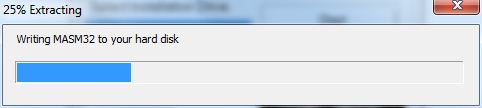
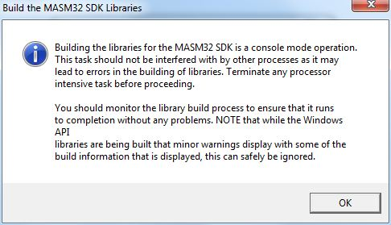

En commençant ce tuto, vous entrez dans la communauté très restreinte de programmeurs qui comprennent véritablement ce qu'ils font...
Malheureusement, l'assembleur a une mauvaise réputation. Celle d'être très difficile... Sachez le tout de suite : C'est faux et archifaux ! :colere2: N'importe qui, je dis bien n'importe qui, peut l'apprendre. Le problème étant de trouver un cours clair, qui partirait de zéro et qui avancerait progressivement (c'est-à-dire sans parler du registre FLAGS au deuxième paragraphe). Mon tuto le sera. Enfin, je l'espère...
Vous êtes prêts ? Vous avez intérêt, car on commence tout de suite...
Dans ce chapitre, nous allons ensemble comprendre les bases de la programmation. Ne vous inquiétez pas, nous allons partir de zéro, aucune connaissance n'est requise pour suivre ce tutoriel.
Tout d'abord, commençons par une question toute bête :
Qu'est-ce qu'un programme ?
J'en vois déjà plusieurs qui lèvent la main... Vous ! Oui, vous, au fond. Parlez plus fort s'il vous plait, on n'entend rien ! Bon, je vais répéter ce qu'il a dit pour tout le monde :-° :
Un programme, c'est tout ce qui fonctionne sur votre ordinateur, par exemple : Un jeu vidéo, un lecteur vidéo (comme Windows Media Player par exemple), ou même un truc tout simple comme le bloc-notes de Windows.
Maintenant, une seconde question :
Comment ça marche ?
Silence. Ah ! Vous faites moins les malins maintenant... Eh bien voilà, la réponse, c'est ce chapitre. ;)
Un programme est une suite d'instructions données à l'ordinateur. Elles sont écrites à l'avance par le programmeur. Lorsque vous mettez le programme en marche, l'ordinateur applique en ordre les instructions écrites dans le programme, ce qui donne à l'écran le programme que vous vouliez.
Retenez donc bien : une instruction est un ordre que l'ordinateur doit suivre. L'ordinateur va suivre les instructions dans l'ordre où vous les avez écrites.
Voici un schéma pour illustrer ceci :
Les instructions apparaissent en vert. Comme vous pouvez le voir, le programme est constitué d'instructions. L'ordinateur va les lire et les appliquer en ordre.
Parlons maintenant des instructions elles-mêmes. Tout d'abord, il y a une chose très importante que vous devez absolument savoir au sujet des instructions :
Vous ne pouvez pas inventer d'instruction. Il existe une liste d'instructions déjà existantes, inventées par les créateurs de l'ordinateur. Nous les apprendrons plus tard. L'ordinateur ne connait que ces instructions. Vous devrez donc combiner intelligemment ces instructions pour créer votre programme.
J'ai une question qui me trotte dans la tête depuis un bon moment... A quoi ressemble une instruction ?
Très bonne question. Je vous le dis tout de suite, les instructions ne sont pas écrites en français. Ça aurait été trop beau... Elles ne sont pas non plus en anglais. L'ordinateur ne comprend aucune langue humaine.
Eh bien voilà, nous arrivons maintenant au coeur du problème : Nous devons écrire des instructions à l'ordinateur, mais l'ordinateur ne comprend pas notre langue. Alors, comment faire ?
Réponse : Simplement en écrivant les instructions dans la langue de l'ordinateur.
Quoi !? l'ordinateur comprend une langue ? o_O
Oui, et ça s'appelle le binaire. Ce n'est pas une langue très riche, puisqu'elle ne possède que deux caractères...deux chiffres, pour être précis : Le 1 et le 0. A la base, le binaire servait en mathématiques à d'autres choses, mais les inventeurs de l'ordinateur l'ont utilisé pour écrire les instructions.
Mais on ne peut rien écrire dans une langue composée uniquement de deux chiffres !!!
Eh bien, si... Je ne vais pas vous expliquer tout de suite comment ça marche exactement, ce n'est pas vraiment le moment. Mais sachez que les instructions ressemblent vraiment à des trucs comme ça : 00001101010101101110 ou bien comme ça 1011110101010111111010..... Chaque instruction a son code composé de 1 et de 0. Il est unique et non modifiable.
Ces instructions écrites en binaire forment ce qu'on appelle le langage machine. C'est-à-dire le langage compréhensible par la machine. ;)
En résumé, tous les programmes utilisables sur un ordinateur sont écrits en langage machine. C'est-à-dire qu'ils sont composés uniquement d'instructions écrites avec des 0 et des 1.
Vous vous souvenez de notre schéma d'un programme ? Voici donc maintenant, à quoi ça ressemble en réalité, c'est-à-dire avec les instructions codées en binaire.
zDico
Binaire : Qui n'est composé que de 0 et de 1.
Langage machine : Ensemble des instructions compréhensibles par l'ordinateur, elles sont écrites en binaire.
Bit : Unité du binaire. Chaque 1 ou 0 est appelé un bit. Par exemple, 1101 contient 4 bits. Ce mot vient de l'anglais.
Eh attends ! On va vraiment devoir taper des zéros et des uns pour programmer !? Ca parait un peu soûlant....
Pas un peu. Très. Imaginez que pour créer ne serait-ce qu'un petit programme, il faudrait écrire au moins plusieurs milliers de bits :waw: . C'est possible, mais extrêmement compliqué. Si vous vous trompez sur un seul bit, mettant un 1 au lieu d'un 0, par exemple, le programme a beaucoup de chances de ne pas fonctionner du tout. Et vous le savez, errare humanum est, l'erreur est humaine.
Heureusement que de gentils programmeurs ont pensé à nous, pauvres humains, et ont inventé un système qui nous facilitera grandement les choses. A chaque instruction en langage machine, (c'est-à-dire, je vous le rappelle, codée en binaire), ils ont fait correspondre un ou plusieurs mots composés de lettres et de chiffres humains. Ca s'appelle le langage assembleur. On peut donc taper notre programme en langage assembleur. Puis, lorsqu'on a terminé, on lance un logiciel, qui va remplacer les instructions écrites en langage assembleur par les instructions correspondantes en langage machine. Sans ça, l'ordinateur ne comprendra rien, puisque la seule langue qu'il connait est le langage machine.
Voici un schéma qui montre un programme écrit en langage assembleur :
zDico
Voici encore une liste de mots de vocabulaire à savoir absolument. (Certains n'ont pas encore été vus) :
Le langage assembleur : Il possède les mêmes instructions que le langage machine. A la seule différence que ces instructions sont écrites en lettres humaines. Chaque instruction en langage machine a une instruction en langage assembleur qui lui correspond et qui veut dire exactement la même chose. On l'appelle parfois "l'assembleur" tout court, à ne pas confondre avec "l'Assembleur".
L'Assembleur : C'est le nom du programme qui traduit du langage assembleur en langage machine. A ne surtout pas confondre avec le langage assembleur. Ce dernier étant le langage dans lequel on écrit, alors que l'Assembleur est le programme traducteur. Pour empêcher la confusion, lorsque je parlerai du langage, j'écrirai "assembleur" sans majuscule, et lorsque je ferai référence au programme j'écrirai "l'Assembleur" avec un "A" majuscule.
L'assemblage : C'est l'acte de traduire du langage assembleur en langage machine. On dit que l'Assembleur assemble un programme. C'est-à-dire qu'il le traduit en langage machine. Nous allons peu à peu utiliser ce mot là, à la place du mot "traduire".
asm ou ASM : C'est l'abréviation du langage assembleur. Le langage ASseMbleur ;) .
Et voici maintenant un schéma qui montre le travail de l'Assembleur. Ce schéma là apprenez-le plus que par coeur, je veux que vous en rêviez la nuit. C'est le schéma le plus important du chapitre, car il résume tout :
Il y a une chose que je ne vous ai pas encore dite : Il existe plusieurs Assembleurs !
Chacun a son propre langage, que l'on appelle une syntaxe. Il y a donc autant de langages assembleur qu'il y a d'Assembleurs. Soyons bien d'accord, le résultat en langage machine est exactement le même, peu importe l'Assembleur utilisé. L'unique différence réside dans le langage utilisé qui différera légèrement selon l'Assembleur.
Voici une liste non exhaustive des Assembleurs existants :
MASM
GoASM
NASM
FASM
TASM
...
Dans ce tuto nous allons apprendre à utiliser, pour l'instant en tout cas, un seul Assembleur. Croyez-moi, c'est déjà pas mal... Il se nomme MASM. Ce qui veut dire Macro Assembler. C'est l'Assembleur de Microsoft. Comme on l'a dit, ainsi que chaque Assembleur, il possède son propre langage assembleur. Nous l'appelerons la syntaxe de MASM.
Comment ça l'Assembleur de Microsoft ? On est obligé d'avoir Windows alors ? Et si j'ai Linux ou Mac ? :(
Ne vous inquiétez pas, il existe des versions de Masm pour Linux et Mac. Nous en parlerons plus tard.
La seule chose que vous devez savoir est qu'un programme assemblé sur un OS, ne fonctionnera pas sur un autre OS. Il faudra l'assembler à nouveau dans l'OS dans lequel vous voulez qu'il fonctionne.
Pour résumer très brièvement ce chapitre, nous avons vu qu'il existe deux façons d'écrire un programme :
En langage machine
En langage assembleur
Retenez bien que l'on utilise exactement les mêmes instructions en langage assembleur qu'en langage machine, la seule et unique différence réside dans la façon de les écrire. (Souvenez-vous des schémas).
On n'utilisera, bien entendu, jamais la première technique, la seconde étant mille fois plus simple (et je n'exagère presque pas). Mais sachez que pendant la seconde guerre mondiale, le langage assembleur n'ayant pas encore été inventé, les programmes gérant les trajectoires des bombes étaient écrits directement en langage machine. Et sans y avoir été je vous le garantis, les programmeurs de la seconde guerre mondiale, ils ont bien galéré.... :p
Ne vous sauvez pas ! Je sais que le titre fait un peu peur, mais c'est normal, il a été inventé par des mathématiciens, et on n'y peut rien, ils raffolent des noms compliqués... Il n’empêche que ce que nous allons apprendre dans ce chapitre est d'une simplicité étonnante, pour des maths...
Quoi !? Des Maths ? Mais je croyais que nous allions apprendre de l'informatique !
Oui, c'est vrai, mais vous aurez besoin de quelques bases en Maths avant de commencer... Ne vous inquiétez pas, ce sera effroyablement simple.
Je vous préviens tout de suite, il est totalement impossible d'apprendre à programmer en assembleur sans ces bases. Alors s'il y en a un qui envisage de sauter ces quelques chapitres d'introduction, je lui fais sa fête. :diable: Faites-moi confiance, lisez-les et apprenez-les, même si pour l'instant le rapport avec la programmation vous paraît lointain. Et pour vous encourager, dites-vous que les grands programmeurs sont aussi passés par là, un jour.
Alors, en avant ! Plongeons-nous dans ce que nos chers confrères mathématiciens ont appelé "les systèmes de numération".
Tout d'abord, traduisons ce mot barbare, et pous cela décomposons-le :
système : Ca vous savez ce que c'est... de : ...Vous ne trouvez pas que vous exagérez un peu ? numération : Ce mot est de la même famille que "numéro", la numération est donc l'acte de compter.
En bref, un système de numération est une manière de compter.
On va apprendre à compter ?!
Eh oui ! Je vous avais dit que ça allait être simple ! (Si je l'avais dit dès le début, je n'aurais pas perdu la moitié de mes lecteurs...)
Je ne parle pas de la façon d'énoncer oralement les nombres, ça, ça dépend de la langue parlée (français, anglais...). Je parle de la façon d'écrire les nombres.
Car vous le savez sûrement, il existe plusieurs manières d'écrire les nombres (plusieurs dizaines, si vous voulez savoir). Il y a celle qu'on utilise tous les jours (0, 1, 2, 3...), mais il y en a d'autres comme par exemple le système romain (vu en CE2, je crois ^^ ), qui utilise des chiffres différents ainsi qu'une logique différente.
Avant d'étudier les systèmes de numération d'un peu plus près, je voudrais m'assurer d'une chose : Savez-vous quelle est la différence entre un chiffre et un nombre ?
Pour ceux à qui la réponse paraît évidente, sachez que j'ai posé cette question à plusieurs élèves de lycée et leurs réponses ont été des plus vagues...
Ouvrons donc le zDico, même si je doute qu'il contienne une chose aussi simple...
Ah si ! Vous en avez du pot...
zDico
Chiffre : Un chiffre est un symbole utilisé pour l'écriture des nombres.
Nombre : Un nombre est un moyen de représenter des grandeurs (des quantités).
En résumé, dans le nombre 354, le 5 est un chiffre, il n'est qu'un signe utilisé pour "coder" le nombre 354, il ne définit pas de quantité. Par contre, quand je dis "j'ai mangé 5 pizzas", le 5 est un nombre, car il définit une quantité.
Revenons à nos moutons. Les systèmes de numération.
Je l'ai déjà dit, il existe un grand nombre de systèmes de numération. Je vais maintenant ajouter une précision :
Les systèmes de numération sont divisés par groupes.
Chaque groupe contient plusieurs systèmes qui fonctionnent tous selon la même règle. Il y a, bien entendu, des différences entre les membres d'un groupe, mais la règle de base reste la même.
Après avoir appris la règle d'un groupe, vous serez facilement capables de comprendre les systèmes qu'il contient. Rassurez-vous, pour la programmation en assembleur, nous n'aurons besoin de maîtriser qu'un seul groupe, et encore, pas tous les membres du groupe seront nécessaires. Le groupe que allons apprendre utilise une unique règle : La notation positionnelle par base. Nous allons bientôt expliquer ce que cela signifie.
Vous avez de la chance. Le système que vous utilisez pour écrire les nombres dans la vie de tous les jours, appartient au groupe que nous allons apprendre. Vous appliquez donc régulièrement, de manière inconsciente, la règle de la notation positionnelle. Ce système se nomme le système décimal. Les autres systèmes que nous allons étudier sont : Le système binaire et le système hexadécimal.
Je vais prendre comme exemple le système décimal, pour vous présenter la notation positionnelle. Ensuite, pour les autres membres du groupe, ça ira comme sur des roulettes.
Voici un schéma des groupes des systèmes de numération, le groupe que nous étudierons est encadré en rouge. Je n'ai pas détaillé les autres groupes, car ils nous seront inutiles. Ils ne sont là qu'à titre d'exemples.
Comme je l'ai expliqué plus haut, je vais commencer par le système décimal. Ce système sera notre exemple pour comprendre la règle qui gère le groupe. Vous pourrez ensuite comprendre plus facilement les deux autres systèmes (binaire et hexadécimal).
Dans la vie de tous les jours, nous écrivons les nombres en utilisant le système décimal.
Voici à quoi ça ressemble, au cas où vous auriez un trou :
Vous avez remarqué que ce système utilise dix signes différents, que l'on appelle des chiffres (Le zéro est aussi un chiffre). On écrit les dix premiers nombres avec un seul chiffre jusqu'à neuf. Ensuite, on combine deux ou plusieurs chiffres pour créer les nombres.
Prenons par exemple le nombre 5823. Lorsque vous voyez ce nombre, vous comprenez automatiquement qu'il signifie cinq mille huit cent vingt-trois. Pourtant, il n'y a qu'un 5, un 8, un 2 et un 3. Que se passe-t-il dans votre tête, inconsciement, pour que vous sachiez que le nombre représenté avec ces chiffres, sans grandes valeurs, vaut plusieurs milliers ? :magicien:
Non, non, ce n'est pas de la magie. En fait, vous faites un calcul. Un calcul basé sur la place des chiffres. C'est la place des chiffres qui déterminera la valeur du nombre, vous allez tout de suite voir comment. Avant cela, remarquez que vous comprenez maintenant pourquoi on l'appelle "la notation positionnelle", la position du chiffre étant déterminante. ;)
Voyons maintenant comment cela fonctionne avec un exemple : Regardez le 8, dans notre nombre 5823. Comment savez vous qu'il vaut 800, en réalité ? Ce que vous faites c'est que vous utilisez ce qui s'appelle la base du système décimal.
Qui ça ? La quoi ?
Oui, vous avez bien lu, la base. C'est le truc le plus important du chapitre, alors ouvrez bien vos oreilles yeux. Chaque système possède une base. Celle-ci correspond au nombre de chiffres (= symboles) que possède le système. Avec la base, nous pouvons calculer la valeur des chiffres (nous verrons comment dans un instant). Je répète : Chaque système a une base.
Dans le système décimal, la base est 10 ("décimal" vient du mot "dix"). Il y a donc dix chiffres dans le système décimal et les voici : 0 1 2 3 4 5 6 7 8 9 .
Ok, donc la base est un nombre, et chaque système en a une. En l’occurrence, dans le système décimal, c'est 10. Mais...ça sert à quoi, en fait ?
Un peu de patience, j'y viens... On utilise la base pour calculer la valeur des chiffres dans le nombre. Voilà comment on fait (je reprends notre exemple "5823") :
Le premier chiffre, tout à droite, garde sa valeur normale, c'est à dire 3.
Le second se multiplie une fois par la base, ce qui nous donne 2 x 10.
Le troisième se multiplie deux fois par la base : 8 x 10 x 10 (= 8 x 100).
Et le quatrième par trois fois la base, comme ça : 5 x 10 x 10 x 10 (= 5 x 1000).
On additionne le tout.
Comme vous le voyez, il y a un "décalage". Je veux dire par là qu'on va toujours garder le premier chiffre (en partant de la droite) tel qu'il est, on ne le multipliera pas. On ne commence à multiplier les chiffres qu'à partir du second. On multiplie donc le deuxième chiffre par 10, une seule fois. Le troisième, deux fois. Le quatrième trois fois, etc... En résumé : Le nombre de fois que l'on multiplie par la base est inférieur de 1 à la place que le chiffre occupe(prenez le temps de la digérer celle-là !). Par exemple, si un chiffre est à la trentième place, on le multipliera 29 fois par la base.
Ensuite, après avoir multiplié les chiffres comme il faut, on additionne le tout.
Pour notre exemple, ça nous donne :
5823 = (5 x 10 x 10 x 10) + (8 x 10 x 10) + (2 x 10) + 3 5823 = (5 x 1000) + (8 x 100) + (2 x 10) + 3 5823 = 5000 + 800 + 20 + 3
En fait, lorsque j'écris 5823, c'est comme si j'écrivais 5000 + 800 + 20 + 3. C'est seulement une façon plus simple de l'écrire.
Ce système de numération se nomme le système décimal, car il utilise 10 comme base.
Voilà pour terminer un schéma qui illustre cet exemple :
Voici un résumé à retenir à tout prix:
Chaque système a une base, et fonctionne selon elle.
La base sert à multiplier correctement les chiffres, selon leur place, afin de connaître la valeur du nombre.
Le premier chiffre tout à droite garde sa valeur.
Le second se multiplie par la base, une fois.
Le troisième se multiplie deux fois par la base.
Le quatrième se multiplie trois fois par la base et ainsi de suite...
On additionne les valeurs trouvées ensemble.
Et on a le résultat ! :)
Tu avais parlé de plusieurs systèmes de numération, je n'en vois qu'un seul, là...
Effectivement, nous n'en n’avons vu qu'un seul. Mais grâce à lui, nous avons appris à utiliser la règle qui sera la même dans les autres systèmes ; l'unique différence sera la base utilisée. Retenez donc bien comment on utilise la base dans le système décimal, on fera la même chose dans les autres systèmes, mais avec des bases différentes.
C'est parti pour un nouveau système ! Maintenant que vous savez utiliser la base, tout sera simple comme bonjour.
Comme vous le savez, nous allons simplement changer de base : Nous passons maintenant en base 2 (au lieu de base 10).
Le nom de ce système est le système binaire. Le mot binaire vient de bini, qui veut dire deux en latin.
Puisqu'on est en base 2, alors il n'y aura que deux chiffres ?
Eh oui, c'est exactement ça. Le 0 et le 1.
Nous allons maintenant faire la même chose qu'avec le système décimal. Prenons le nombre 1011 comme exemple :
Le chiffre tout à droite garde sa valeur, 1.
Le second chiffre est multiplié par la base une seule fois : 1 x 2 = 2
Le troisième chiffre est multiplié par la base deux fois : 0 x 2 x 2 = 0 x 4 = 0
Le quatrième chiffre est multiplié par la base trois fois : 1 x 2 x 2 x 2 = 1 x 8 = 8
On additionne le tout : 1 + 2 + 0 + 8 = 11
Voici un schéma pour résumer :
Maintenant pour terminer, ouvrons le zDico pour apprendre quelques notions importantes du système binaire.
zDico
Rappel : Bit : Unité du binaire. Chaque 1 ou 0 est appelé un bit. Par exemple, 1101 contient 4 bits. Ce mot vient de l'anglais.
Le poids : Il existe une notion de poids dans les bits. Le bit qui est tout à droite, est le bit de poids le plus faible. On dit qu'il est de poids 0. Ensuite vient le bit de poids 1, le second en partant de la droite. Ainsi de suite, jusqu'au bit de poids le plus fort, complètement à gauche.
Poids du bit = nombre de fois que l'on multiplie par la base
A partir de maintenant, j'utiliserais le poids pour indiquer de quel bit je parle. Lorsque je dirais le bit de poids 3, je ferais référence au quatrième bit en partant de la droite. Par commodité, j'écrirais plus souvent le bit 3.
MSB : Le Most Significant Bit ou MSB est le bit de poids le plus fort du nombre (tout à gauche).
LSB : Le Least Significant Bit ou LSB est le bit de poids le plus faible du nombre (tout à droite). Il est de poids 0.
Allez ! Un dernier système et je vous laisse tranquilles avec les maths ! :)
Nous allons maintenant aborder un système dont le seul nom en a fait fuir plus d'un, je parle du système hexadécimal.
Décomposons d'abord son nom : hexa veut dire 6 et décimal 10. Ce qui nous donne 16.
Bon, les plus attentifs l'auront compris, ce système utilise 16 comme base.
Il y aura donc 16 chiffres ! On va les trouver où ? J'en connais que dix, moi !
Eh oui, bonne question. Il nous manque des chiffres pour ce système. Six pour être précis. Pour résoudre ce problème, les mathématiciens ont eu une idée : utiliser des lettres. Voici donc la liste des chiffres du système hexadécimal, en ordre :
0, 1, 2, 3, 4, 5, 6, 7, 8, 9, A, B, C, D, E, F.
Comptez, ça fait seize !
Le A vaut donc 10 (en décimal), le B vaut 11 ; le C, 12...jusqu'au F qui vaut 15. ;)
Comme d'habitude, nous allons prendre un exemple et le convertir ensemble en décimal : C8FB.
On laisse le B comme il est. Ça nous donne donc 11.
On a vu plus tôt que le F valait 15. On multiplie donc 15 par la base (qui est 16) : 15 x 16 = 240
On multiplie le 8 deux fois par la base : 8 x 16 x 16 = 2048
Le C vaut 12. On multiplie donc 12 trois fois par la base : 12 x 16 x 16 x 16 = 49 152
On additionne le tout : 49 152 + 2048 + 240 + 11 = 51451
Non, nous n'en n'avons pas encore terminé avec les systèmes de numération. On verra plus tard d'autres notions (convertir d'un système à l'autre, les opérations...). Mais pour l'instant, je vous laisse cogiter sur ça. :-°
Dans le prochain chapitre nous allons faire une petite pause en découvrant les outils nécessaires à la programmation en assembleur.
Non, nous n'en n'avons pas encore fini avec la théorie. :diable: Vous avez encore deux-trois trucs à apprendre avant de pouvoir commencer la programmation en assembleur proprement dite. Mais ne vous inquiétez pas, c'est bientôt terminé. J'aurais pu vous mettre encore un chapitre théorique, mais dans ma grande gentillesse :-° , j'ai préféré faire une pause avec un chapitre dans lequel le cerveau n'est pas indispensable.
Qu'allons nous donc faire dans ce chapitre ?
Eh bien nous allons tout simplement télécharger et installer tous ce dont nous avons besoin pour programmer en assembleur.
Donc nous y voici : De quels outils avons nous besoin pour programmer en assembleur ?
Si vous avez été attentifs, vous devriez pouvoir imaginer l'un d'entre eux. D'ailleurs pour ceux qui n'y parviennent pas, je conseille vivement un retour à la case départ (nan, je plaisante).
Voici la réponse : l'Assembleur.
Vous vous souvenez j'espère de ce programme qui traduit ("assemble", pour les pros) les instructions écrites en langage assembleur en langage machine.
Voilà à nouveau le schéma, pour ceux qui auraient un trou :
Vous vous rappelerez aussi qu'il existe plusieurs langages assembleur, et autant d'Assembleurs. C'est très simple, chaque Assembleur a son langage assembleur. Il pourra traduire uniquement ce langage là en langage machine.
Comme je l'ai dit dans le chapitre 1, nous allons utiliser MASM comme Assembleur.
Voyons maintenant les autres outils indispensables :
Un éditeur de texte : C'est le programme dans lequel vous allez écrire votre code en langage assembleur avant l'assemblage. On pourrait utiliser n'importe quel programme qui permet l'affichage du texte (comme "bloc-note"), mais certains éditeurs de texte colorent le code de façon à le rendre plus clair, et croyez-moi ou pas, c'est très utile !
Un débbuger : C'est un programme qui va lire votre code et vous faire part des erreurs qu'il contient (parfois un peu brutalement, je l'avoue...). Si vous ne faites aucune erreur, vous pourrez vous en passer, mais je peux vous assurer que c'est impossible...
Autres : Il y en a encore d'autres (comme l’Éditeur de liens, par exemple), mais vous n'avez pas besoin de les connaître (en tout cas pas pour l'instant).
Quoi ?! On va devoir acheter tous ces programmes ?
Bien sûr que non, ils sont gratuits. Nous allons les télécharger en quelques minutes seulement. De plus, nous n'aurons pas besoin de les télécharger séparement, car il existe des logiciels "tout en 1", qui regroupent tous les outils indispensables à la programmation en assembleur. On les appelle des IDE (Environnements de Développement Intégrés). La seule chose qui ne sera pas incluse dans l'IDE est l'Assembleur, MASM, en l'occurence.
Passons maintenant aux téléchargements proprement dits.
Voici une capture de la page. Les trois liens à télécharger sont mis en évidence (ça, pour de l'évidence...). Les deux premiers sont obligatoires. Le dernier est un pack de traduction pour traduire l'IDE en français (ou en ukrainien, si ça vous chante :-° ).
Maintenant téléchargez MASM en allant ici. Cliquez ensuite sur l'un des liens pour lancer le téléchargement ("US Site 1", par exemple).
Mettez tous les téléchargements dans le même dossier, ça devrait vous faciliter les choses. Nommez le "Assembleur", par exemple (en fait vous pouvez le nommer comme vous voulez, mais gare à vous si vous le laissez se nommer "Nouveau dossier"... :diable: ).
Avant de passer à la suite, vérifiez que vous avez bien les fichiers ci-dessous :
Si vous avez tous les fichiers nécessaires, vous pouvez passer à l'installation. Je vous préviens, ça ne sera pas que du "next>next>next>OK", si vous voyez ce que je veux dire. Mais si vous suivez mes instructions à la lettre vous réussirez sans problème une parfaite installation.
Alors, on commence ?
Tout d'abord faisons quelques manipulations. Ouvrez le dossier Assembly, vous devrez voir une liste de fichiers ressemblant à celle-ci apparaître :
Copiez tous les fichiers à part celui nommé "Addins". Collez-les dans le dossier appelé "RadASM" (Vous le trouverez dans le dossier parent que nous avons nommé "Assembleur").
Maintenant, ouvrez le dossier "RadLNG". Il est censé contenir un dossier "Languages". Placez ce dernier dans le dossier "RadASM".
Il ne nous reste plus qu'à installer MASM. Ne vous inquiétez pas, ce sera très simple, je vais vous inonder de captures d'écran. :D
Ouvrez le dossier "m32v10r" et cliquez sur le programme d'installation "install". Voici ce qui apparaîtra :
Cliquez sur le disque C, puis sur "start".
Ensuite, vous aurez cela :
Cliquez sur "OK".
Puis dans cette fenêtre, cliquez sur "Oui" :
Dans celle-ci, cliquez sur "OK" :
Puis sur "Extract" :
Patientez une minute :

Encore un "OK" :

Vous aurez maintenant une fenêtre toute noire qui va commencer à faire des trucs bizarres : Pas de panique, rien ne va exploser. :p Et pour vous prouver que c'est normal, regardez, moi aussi j'ai eu la même... :-°
Patientez jusqu'à que ça se termine. A la fin, vous aurez une fenêtre comme celle-ci :
Ça veut dire en français : "L'installation s'est bien passée, appuyez sur n'importe quelle touche du clavier pour continuer". Oui je sais, moi aussi, quand j'ai vu ça, j'ai été rassuré... :D
Vous aurez ensuite un truc de ce genre :
Pour changer des OK, on va mettre "Yes".
Ce programme va alors s'ouvrir :
Il ne nous servira pas. Fermez-le en cliquant sur la croix en haut.
Il ne nous reste plus qu'à configurer RadASM. Vous allez voir, c'est très simple.
Dans notre dossier "Assembleur", ouvrez le dossier "RadASM". Cliquez sur l’exécutable du même nom : vous le verrez sur fond gris dans la capture d'écran.
Voilà, vous avez ouvert RadAsm pour la première fois. J'espère que vous aimez, car c'est là qu'on va passer le plus clair de notre temps. :-°
Commençons la configuration.
Tout d'abord, traduisons RadASM de la langue de Shakespeare à celle de Molière. Pour cela, allez dans l'onglet "Option" et cliquez sur langue. Choisissez le français et cliquez sur Valider. (Bon, je ne vous mets pas de capture d'écran, mais ça devrait aller sans...)
Maintenant, passons à des choses plus sérieuses. Il faut indiquer à RadASM quel Assembleur nous allons utiliser ainsi que l'endroit où il se trouve. Toujours dans l'onglet "Options", cliquez cette fois sur "Langages de programmation". Vous verrez cette fenêtre apparaître.
A moins que vous vouliez utiliser RadASM pour coder en HTML, supprimez ce dernier en cliquant sur le bouton "Supprimer". Cliquez maintenant sur le bouton avec les points de suspensions. Cette fenêtre apparaîtra :
Choisissez "masm" (en bleu dans ma capture d'ecran), puis cliquez sur "Ouvrir". Puis cliquez sur "Ajouter" et pour terminer, sur "Valider".
C'est bien beau tout ça, on fait ce que tu dis, mais on comprend pas à quoi ça sert...
En verité, ce n'est pas vraiment utile de le savoir, ce n'est que de la configuration. Mais pour faire court, nous venons d'indiquer à RadASM quel Assembleur nous allons utiliser. Par contre, nous ne lui avons pas encore dit où se trouve cet Assembleur dans le disque dur. C'est ce que nous allons faire maintenant.
Dans l'onglet "Option", cliquez sur "Emplacements par défaut", une fenêtre ressemblant à celle-ci va apparaître :
En fait, la vôtre sera un peu différente. Vous n'aurez pas les mêmes textes que moi dans les cases. Eh bien, tout ce que vous avez à faire, c'est de recopier ma fenêtre, puis cliquez sur "valider" (laissez la seconde case vide, comme dans la capture d'écran).
Voilà, un nouveau chapitre de terminé.
Profitez bien de votre pause, car au prochain chapitre on repart à l'assaut de la théorie...
Je vous rassure, ça sera quand même plus sympa que les systèmes de numération. :D
Oui, encore un chapitre théorique, désolé. :euh: Mais je vous rassure, celui-ci sera plus intéressant que les autres : Nous allons plonger au coeur de l'ordinateur pour comprendre comment il fonctionne. En effet, il est indispensable de comprendre comment marche la machine pour être capable de programmer en assembleur.
Bien entendu, comprendre le fonctionnement de l'ordinateur dans ses moindres détails prend en réalité énormément de temps. Je vais donc vous présenter une version simplifiée, qui sera amplement suffisante pour le moment. Au fur et à mesure du tuto, lorsque le besoin se fera sentir, j'ajouterai éventuellement des informations.
Tout d'abord je vais commencer par poser LA question. Cette question, j'imagine que beaucoup d'entre vous se la sont déjà posée :
Comment un objet uniquement composé de fer et de plastique peut-il "réfléchir" ? o_O
En fait, ceci équivaut à demander tout simplement : "Comment marche un ordinateur ?".
La réponse complète à cette question n'est pas simple, vous vous en doutez. Elle pourrait en réalité remplir plusieurs livres.
Dans ce tuto, je vais simplement vous présenter les bases, afin que vous ayez une vue générale du ventre de la bête.
Croyez moi, ça fait déjà beaucoup...
Je vais commencer par énoncer la liste des composants principaux d'un ordinateur. J'ajouterai à chacun d'eux une courte description. Ensuite, nous reprendrons les plus importants, pour les étudier plus en profondeur :
Le processeur aussi appelé CPU : C'est, on peut dire, le composant principal. C'est lui qui "réfléchit". Bon, je n'en dis pas plus pour le moment à son sujet, mais le prochain chapitre lui est réservé ; nous y découvrirons notamment qu'il est lui-même composé de plusieurs parties.
La mémoire : Pour fonctionner, l'ordinateur a besoin de stocker des données. Il possède deux endroits réservés à cet effet :
Le disque dur : C'est là bas que sont stockées les données dont l'ordinateur n'a pas besoin de façon constante. Tous vos fichiers (comme vos musiques par exemple) sont enregistrés dans le disque dur. Mais le disque dur a un inconvénient, il est lent. Je veux dire par là, que l'ordinateur prend beaucoup de temps pour accéder aux données qui y sont enregistrées. Un exemple : Si vous cliquez sur une musique vous verrez que l'ordinateur prend un certain temps pour la mettre en marche. La musique étant stockée dans le disque dur, l'ordinateur prend du temps à l'atteindre. D'un autre coté, le disque dur a un avantage, il ne coûte pas cher. C'est pour cette raison que les ordinateurs ont des disques durs de très grande taille.
La mémoire vive ou RAM pour les intimes : Là bas sont stockées les données dont l'ordinateur a besoin constamment. Principalement, les données des programmes en cours d’exécution sont stockées dans cette mémoire (par exemple, la vie d'un personnage, dans un jeu). La RAM est tout le contraire du disque dur : elle est rapide, mais coûte très cher. C'est justement pour cette raison que les données dont l'ordinateur a besoin constamment y sont stockées, étant donné qu'il doit y accéder très rapidement. (Vous vous imaginez si l'ordinateur devait s’arrêter plusieurs secondes au milieu du jeu, pour savoir combien de vie a le personnage ?) :colere: Cependant, à cause de son coût, l'ordinateur ne possède pas une très grande mémoire vive.
Lorsqu'un programme n'est pas en cours d’exécution, il est stocké sur le disque dur. Lorsque vous le lancez, l'ordinateur enregistre toutes les données du programme du disque dur vers la mémoire vive. Cela lui permet d'y avoir accès plus rapidement (le programme est donc plus rapide).
Dans ce tuto nous allons nous concentrer sur le fonctionnement de la mémoire vive, puisque c'est elle qui est utilisée pour les programmes en cours. Il n'y a pas d'intêret à expliquer le fonctionnement du disque dur. Dorénavant, lorsque je parlerai de la mémoire, sans préciser laquelle, je ferai toujours référence à la mémoire vive.
Les bus : Non, pas les transports en commun, mais ça y ressemble... Eh oui, les bus servent à transporter les données d'un composant de l'ordinateur à un autre. (Par exemple, du processeur vers la mémoire et vice versa.)
Maintenant que les présentations sont faites, passons à quelque chose de plus sérieux...
Avant que l'on commence à analyser chacun des composants, apprenons à donner un nom à ce que nous allons faire : Nous allons étudier l'architecture de l'ordinateur.
zDico
L'architecture est la façon dont l'ordinateur est construit à l'intérieur : Ses composants, la façon dont ils sont connectés les uns aux autres, etc. Bref, toute l'organisation interne de l'ordinateur. Retenez bien cette définition, elle est cruciale pour la suite.
L'architecture de l'ordinateur est ce que nous allons étudier durant ce chapitre et les deux suivants. D'ailleurs, à la place du titre du chapitre "Comment ça marche", j'aurais pû mettre "Architecture de l'ordinateur", mais ça aurait fait fuir pas mal de monde... ^^
Apprenons en maintenant un peu plus à ce sujet :
Il existe dans le monde de la machine deux types d'architectures (entendez donc deux façons d'organiser les composants internes) : L'architecture von Neumann et l'architecture Harvard.
L'architecture influe bien entendu sur les capacités. En termes de performance, on ne peut pas vraiment dire que l'une est meilleure que l'autre, chacune possédant des atouts et des défauts que l'autre n'a pas. En fait, chacune est plus adaptée à un type d'appareil. (Car bien entendu, les ordinateurs ne sont pas les seuls à posséder un processeur, une mémoire, des bus, etc ; d'autres appareils en ont aussi.)
Quoi qu'il en soit, la plupart des ordinateurs sont construits selon l'architecture von Neumann.
Voici maintenant une règle importante à retenir :
Un programme écrit pour une architecture ne fonctionnera pas sur une autre.
C'est à dire que vous ne pourrez pas faire marcher un programme écrit pour une architecture Harvard sur un ordinateur construit selon la von Neumann, et vice versa. En langage de pro on dit que l'architecture Harvard et l'architecture von Neumann ne sont pas compatibles.
Puisque notre but est d'apprendre à écrire des programmes pour ordinateur, c'est l'architecture von Neumann que nous allons étudier. Tout ce que je dirai ici concernera donc uniquement l'architecture von Neumann.
La liste de composants citée précédement n'était qu'un avant-goût de ce qui vous attend. Vous avez encore beaucoup à apprendre au sujet des ces composants. Mais avant cela, nous allons nous intéresser à un problème capital.
Vous vous souvenez que l'objectif de ce chapitre est d'expliquer la façon dont l'ordinateur réfléchit. Penchons nous donc attentivement sur cette question.
Avant tout, il faut savoir que toute intelligence, afin de pouvoir réfléchir, doit obligatoirement posséder une chose : La mémoire.
Prenons un exemple. Imaginez que je vous demande de calculer 8 + 5. Avez vous la moindre chance de me répondre si vous êtes incapables de retenir les nombres que je vous demande d'additionner ? Bien sûr que non... Vous devez savoir quels sont les nombres afin de pouvoir calculer. Il vous faudra aussi retenir que l'opération demandée est l'addition. Sans cela, vous ne saurez que faire de ces deux nombres. ;)
Pour l'ordinateur c'est exactement la même chose. Pour que le processeur puisse faire le calcul démandé, il faut que les informations nécessaires aient étés enregistrées au préalable dans la mémoire.
Mais on fait comment pour enregistrer des informations dans un ordinateur, après tout c'est pas humain ?
Réponse : Nous allons utiliser la seule chose dont nous disposons dans un appareil électrique : De l'électricité.
Quoi ?! On peut stocker des données avec de l'électricité ?
Eh oui, c'est exactement ça ! On peut enregistrer énormement de données en utilisant l'électricité. Pour que vous compreniez cela, je vais vous raconter une petite histoire... (Ce sera sans doute l'histoire la plus débile que vous aurez entendu cette année, mais peut-être l'une des plus utile).
Il était une fois, un pirate qui s'appelait Barbe-verte. Il parcourait les mers avec son équipage. Lorsqu'il rencontrait une île, il la pillait de tout ses biens. :pirate:
Mais Barbe-verte avait un sérieux problème : il était sans arrêt dans la crainte que les soldats de la Marine ne l’attrapent. A cause de cela, il ne participait jamais aux attaques. Il envoyait son équipage piller les îles sans lui, laissant à son second la direction des opérations. Lui-même restait à bonne distance de l'île dans son bateau, prêt à s'enfuir en cas de pépin.
Mais comment savoir si les choses tournaient mal, tout en restant si loin de l'île ?
Barbe-verte était peu valeureux mais très futé. Il inventa un moyen pour savoir si la Marine était présente sur l'île, tout en restant en sécurité sur son bateau : Lorsqu'il n'y avait aucun danger, son second allumait une lampe. Quand Barbe-verte la voyait briller, il savait qu'il pouvait rejoindre son équipage en toute sécurité. Dans le cas contraire, si l'équipage se faisait capturer, la lampe restait éteinte et Barbe-verte savait qu'il ne lui restait plus qu'à lever l'ancre et s'enfuir aussi vite que possible. :ninja:
Il n'y a rien à dire, Barbe-verte a beau être un misérable poltron, son idée était très ingénieuse. Plusieurs années heureuses (et sanglantes) passèrent ainsi.
Un jour, Barbe-verte voulut en outre être prévenu à l'avance lorsqu'un trésor était découvert sur l'île. Il donna alors à son second une autre lampe à allumer en cas de trésor trouvé. Pour ne pas confondre les deux signaux, il décida que la lampe de droite serait celle qui indiquerait la présence de la marine et que celle de gauche indiquerait qu'un trésor avait été trouvé.
Barbe-verte venait d'inventer un système parfait. Il lui permettait de recevoir à distance des informations de son second. Ce dernier n'avait qu'à "enregistrer" la bonne information dans les lampes.
Pour chaque information, Barbe-verte devait donner à son second une lampe supplémentaire.
En réalité, le système de Barbe-verte est plus puissant que vous ne l'imaginez. Il peut aussi servir à transmettre des nombres (par exemple, le nombre de trésors trouvés...ou de soldats abattus). Comment ? Eh bien en utilisant le système binaire. Eh oui, je vous avais prévenus qu'on allait le revoir celui-là...
Euh...quel rapport entre le système binaire et Barbe-verte ? :euh:
En fait si vous réfléchissez deux secondes vous verrez que c'est exactement la même chose. Chaque lampe de Barbe-verte est comme un chiffre en binaire. Une lampe peut être soit allumée soit éteinte. De la même façon, un chiffre binaire peut être soit 1 soit 0. Une lampe allumée signifiera 1, et une éteinte 0.
Par exemple, si l'équipage trouve 5 trésors, le second allumera la première lampe tout à droite, il laissera la seconde éteinte et allumera la troisième. Cela équivaut a écrire 101 en binaire, qui est égal à 5 en décimal.
Voici un schéma pour illustrer ceci :
Les lampes allumées sont en jaune, et la lampe éteinte en noir.
Bon, maintenant que le rapport entre les lampes et le binaire est clair, approfondissons un peu...
Dans le cas où Barbe-verte donnerait à son second uniquement quatre lampes, ce dernier ne pourra pas lui indiquer un nombre supérieur à 15, puisqu'en binaire, avec quatre bits, on ne peut pas dépasser 15 (= 1111), le nombre 16 nécessitant l'ajout d'un cinquième bit : 1 0000. S'il lui donne huit lampes, il ne pourra pas dépasser 255 (= 1111 1111) et pour transmettre 256, il lui faudra une neuvième lampe.
Elle est belle ton histoire, mais quel rapport avec l'informatique ?
Le rapport ? C'est tout simple : La mémoire de l'ordinateur fonctionne exactement selon le système de Barbe-verte. La seule différence est que nous allons remplacer les lampes par de minuscules composants électriques qu'on appelle des bascules (du voc à retenir). Comme les lampes, les bascules ont deux modes : chargée ou non chargée.
Une bascule chargée d'électricité équivaut à une lampe allumée (= 1). Une bascule non chargée est comme une lampe éteinte (= 0).
Lorsqu'il veut enregistrer des données, l'ordinateur fait comme le second de Barbe-verte, il utilise le système binaire. Mais au lieu d'allumer des lampes, il charge les bascules d'électricité. Au final, cela revient au même... La seule différence étant que l'ordinateur peut charger des milliers de bascules en un instant, et donc enregistrer énormément d'informations très rapidement. Par contre, le second de Barbe-verte, pour allumer des milliers de lampes... :lol:
Résumons avec un exemple. Imaginons qu'au cours d'un programme on demande à l'ordinateur d'enregistrer une donnée. Par exemple, la vie d'un personnage (oui je sais, je prends toujours les mêmes exemples). Eh bien il va charger les bascules en suivant le système binaire : Si la vie est de 40 (= 10 1000 en binaire), il utilisera 6 bascules, car en système binaire, on a besoin de 6 bits pour écrire ce nombre. Il chargera la quatrième et la sixième (en partant de la droite), et laissera les autres non chargées. Exactement comme dans le nombre binaire : 10 1000.
Voici un schéma :
Dans ce schéma, vous pouvez voir clairement l'enregistrement des données (ici le nombre 40) en chargeant les bascules selon le système binaire.
Mais alors on peut enregistrer que des nombres ?
Bien sûr que non ! On peut enregistrer n'importe quel type de données : Du texte, des couleurs, des sons... Mais tous seront codés sous forme de nombres binaires. Comment ? Nous en parlerons plus tard. Pour l'instant, retenez seulement que tout, je dis bien tout, ce qui est stocké dans la mémoire de l'ordinateur, l'est sous forme de nombres binaires, et est enregistré au moyen de bascules.
Prenons une petite pause dans l'explication du fonctionnement de la mémoire, pour découvrir quelques mots importants utilisés dans le système binaire.
Car maintenant, vous commencez sûrement à comprendre l'importance de ce système pour la compréhension de la mémoire.
Ouvrons donc le zDico :
zDico
Rappel : Bit : Unité du binaire. Chaque 1 ou 0 est appelé un bit. Par exemple, 1101 contient 4 bits. Ce mot vient de l'anglais.
Quartet : C'est un ensemble de quatre bits. Par exemple, 1110 est un quartet. Avec un quartet, on ne peut pas dépasser le nombre 15 (= 1111 en binaire). Un quartet se dit en anglais "nibble".
Octet : C'est un ensemble de huit bits. Par exemple, 1010 0111 est un octet. Il y a deux quartets dans un octet (logique !). Avec un octet, on ne peut pas dépasser le nombre 255 (= 1111 1111 en binaire). Un octet se dit en anglais..."octet", tout simplement.
Mot : C'est un ensemble de seize bits. Par exemple, 1011 0100 1111 0011 est un mot. Un mot contient deux octets (= quatre quartets). Avec un mot, on ne peut pas dépasser le nombre 65 535 (= 1111 1111 1111 1111). Un mot se dit en anglais "word".
Double mot : C'est un ensemble de trente-deux bits. Par exemple, 1011 0100 1101 0011 1111 0011 0100 1111 est un double mot (à ne pas lire à voix haute, sous peine d'internement). Un double mot contient deux mots (= quatre octets = huit quartets). Avec un double mot, on ne peut pas dépasser le nombre 4 294 967 295 (= 1111 1111 1111 1111 1111 1111 1111 1111). Un double mot se dit en anglais "double word".
J'ai un problème. Si tout est vraiment enregistré dans les bascules, comment l'ordinateur fait-il pour ne pas tout mélanger ? Il y a des millions de bascules dans la mémoire, certaines contiennent des informations sur la vie du personnage, d'autres sur la couleur du chapeau du personnage, certaines sur la musique du jeu etc... Comment l'ordinateur fait-il pour s'y retrouver et savoir quelles bascules contiennent quelles informations ?
Excellente question ! C'est un vrai Big-problème ! Heureusement qu'il y a ce qu'on appelle l'organisation de la mémoire. Eh oui, comme dans tout, pour que ça marche, il faut de l'ordre. Et dans la mémoire, l'ordre ne manque pas, tout est organisé de façon très précise.
Voici donc un schéma qui montre comment la mémoire est organisée :
Comme vous pouvez le voir, les bascules sont disposées par barrettes de huit. La mémoire est ainsi composée de millions de barrettes chacune comportant huit bascules. Une barrette peut stocker un octet (puisqu'elle contient huit bascules).
Maintenant, il y a une chose hyper importante à savoir : Les barrettes sont numérotées. La première porte le numéro 0, la seconde le numéro 1 etc... On appelle ce numéro une adresse.
C'est grace à l'adresse que l'ordinateur arrive à se repérer dans la mémoire. Lorsqu'il stocke une donnée, il la met à une adresse précise. Plus tard dans le programme, lorsque vous lui demandez d'utiliser cette donnée il va aller la chercher à l'adresse où il l'avait placée.
Ajoutons les adresses à notre schéma :
Voici maintenant une règle à retenir :
On ne peut stocker qu'une seule donnée par adresse. Retenez bien cela c'est important. Cela implique que même si j'ai une donnée qui prend moins d'un octet je suis quand même obligé d'utiliser toute la barrette. Imaginez par exemple que je veuille stocker la vie d'un personnage, et que celle-ci soit de 18 (=1 0010 en binaire). Normalement, je n'ai besoin que de cinq bits. Pourtant, je dois quand même utiliser toute la mémoire qu'il y a à cette adresse, c'est à dire un octet (qui vaut huit bits, je rappelle pour les rêveurs). Je vais donc enregistrer 0001 0010 en mémoire. Les zéros placés avant le nombre ne modifient pas sa valeur (de la même façon qu'en décimal : 0018 = 18).
D'accord, je ne peux pas utiliser moins qu'un octet, mais est-ce-que je peux utiliser plus qu'un octet ? Parce qu'avec un seul octet, on ne peut pas dépasser 255. Alors je fais comment si je veux stocker une donnée plus grande que ça ?
Enfin un qui suit, ça fait plaisir ! :D
La réponse est toute simple : On va stocker notre donnée sur plusieurs barrettes consécutives. Prenons un exemple : Imaginons que je veuille stocker un mot à l'adresse numéro 2, disons le nombre binaire 1111 1111 0101 0101 (= 65 365 en décimal). Voici ce que je vais faire : Je vais dire à l'ordinateur : "Enregistre le mot 1111 1111 0101 0101 à l'adresse 2". L'ordinateur va automatiquement enregistrer 0101 0101 à l'adresse 2 et 1111 1111 à l'adresse 3. Ensuite, lorsque je demanderai à l'ordinateur "Donne-moi le mot stocké à l'adresse 2", il m'enverra automatiquement le contenu de l'adresse 2 et de l'adresse 3. Autrement dit, il m'enverra 1111 1111 0101 0101. Par contre, si je demande l'octet situé à l'adresse 2, il m'enverra uniquement 0101 0101. De la même manière, si je demande l'octet placé à l'adresse 3, je recevrai 1111 1111.
Jetez un coup d'oeil à ce schéma qui résume bien la situation au sein de la mémoire, lorsqu'on stocke le nombre 1111 1111 0101 0101 à l'adresse 2 :
Limpide ! Enfin, pour moi en tous cas... :-° Ne vous inquiétez pas si la fin (à partir de la dernière question) n'est pas super claire pour vous. C'est tout à fait normal. Relisez la plusieurs fois, et si ça ne vous dit toujours rien, ça viendra plus tard en pratiquant. ;)
zDico
A partir de maintenant on va appeler les choses par leur nom : Ce que j'appelle "barrette" depuis le début s'appelle en réalité un emplacement mémoire. Retenez bien ce mot, on va le revoir et pas qu'une fois !
Nous allons maintenant nous occuper d'expliquer un mot qui est pour beaucoup l'objet d'une confusion : le mot "byte". (Je ne parle pas du bit avec un 'i' qui se prononce comme il s'écrit, mais du byte avec un 'y' qui se lit 'baït'.)
Comme le quartet, l'octet, le mot et le double mot, le byte indique une quantité de bits. Mais contrairement à eux, ce n'est pas une quantité absolue, elle peut changer d'une machine à l'autre.
Car un byte signifie en fait : "Une quantité de bits égale au nombre de bits contenus dans un emplacement mémoire".
Combien de bits peut-on stocker dans un seul emplacement mémoire ? Ceux qui auront suivi jusque là me répondront : "8, tu l'as dit dans ce chapitre". Et ils auront tout à fait raison. ^^
Néanmoins, il faut savoir que je parlais de nos ordinateurs. Mais il existe d'autres machines dans lesquelles un emplacement mémoire ne fait pas 8 bits mais un nombre différent.
Par exemple, si l'on parle d'une machine dont les emplacements mémoire contiennent chacune 4 bascules (et qui peuvent donc stocker 4 bits), un byte mesurera 4 bits. Mais quand je parlerai d'un ordinateur comme les nôtres, dont les emplacements mémoire ont 8 bascules, le byte équivaudra à 8 bits.
Dans nos ordinateurs donc, un byte vaut un octet, mais cela ne veut pas dire pour autant que ce sont des synonymes !
Sachez que j'utiliserai souvent le mot byte dans ce tuto pour indiquer la taille des données.
En parlant de taille de données, vous avez certainement déjà vu des abréviations comme Ko, Mb, Go, GB...j'en passe et des meilleurs. :-° Vous devez sûrement savoir qu'elles indiquent la taille des données. Mais savez-vous ce qu'elles signifient précisément ? Eh bien figurez-vous que vous êtes à présent tout à fait capables de les comprendre :
Il y a trois unités représentées par des abréviations :
L'octet, représenté par un 'o'. Exemple : 100 o = 100 octets.
Le bit, représenté par un 'b' (minuscule). Exemple : 100 b = 100 bits.
Le byte, représenté par un 'B' (majuscule). Exemple : 100 B = 100 bytes.
Il est possible d'ajouter des lettres avant ces trois unités pour les multiplier :
K : Lorsqu'on ajoute un K avant l'une des trois unités, on la multiplie par 1024. Ce K représente le mot kilo. Exemples :
1 kiloctet = 1 Ko = 1024 o = 1024 octets.
1 kilobit = 1 Kb = 1024 b = 1024 bits.
1 kilobyte = 1 KB = 1024 B = 1024 bytes.
M : Lorsqu'on ajoute un M, on multiplie l'unité par 1 048 576. Ce M représente le mot méga. Exemple :
1 mégaoctet = 1 Mo = 1024 Ko = 1 048 576 o.
1 mégabit = 1 Mb = 1024 Kb = 1 048 576 b.
1 mégabyte = 1 MB = 1024 KB = 1 048 576 B.
G : Lorsqu'on ajoute un G, on multiplie l'unité par 1 073 741 824. Ce G représente le mot giga. Exemple :
1 gigaoctet = 1 Go = 1024 Mo = 1 048 576 Ko = 1 073 741 824 o.
Vous connaissez maintenant les unités principales utilisées dans le monde informatique. Et à la différence de beaucoup de monde, vous savez exactement ce qu'elles signifient au niveau électronique.
Dans ce chapitre nous avons appris le fonctionnement de la mémoire, l'un des trois composants principaux de l'ordinateur.
Dans le prochain chapitre, nous parlerons du processeur.
Allez, encore un petit effort et nous pourrons passer à la pratique ! :)
Au cas où la définition du processeur serait déjà ressortie par l'autre oreille, la voici à nouveau :
Le processeur ou CPU est le composant principal de l'ordinateur. C'est lui qui "réflechit". Le processeur est lui même composé de plusieurs parties. Nous découvrirons les plus importantes plus tard dans ce chapitre.
Bien que depuis le début du tuto je l'appelle "processeur", le mot correct est en réalité : Microprocesseur.
C'est quoi ça ? o_O
Pour bien comprendre le sens ce mot il faut remonter longtemps en arrière. A l'époque où l'ordinateur fut inventé.
Laissez-moi vous raconter cela...
Il y a bien longtemps, peu avant que la seconde guerre mondiale n'éclate, un homme nommé Alan Turing, imagina une théorie permettant la création d'une machine capable de calculer. Mais à ce moment, rien ne fut encore réellement fabriqué. On dût attendre jusqu'en pleine guerre, pour que le premier ordinateur voit le jour. Il fut rapidement suivi par plusieurs autres, chacun plus performant que son prédécesseur.
Mais il y avait un problème : Les ordinateurs étaient énormes... Ceci était principalement dû à la taille du processeur. Les différentes parties de celui-ci étaient séparées les unes des autres et prenaient beaucoup de place.
C'est là que débarquent nos deux héros, Marcian Hoff et Frederico Faggin, tous deux ingénieurs dans la société Intel. Il réussirent le miraculeux exploit de miniaturiser les différentes parties du processeur et de les intégrer dans un seul composant.
Le processeur "Tout en un" était né. Mais les ingénieurs lui donnèrent un autre nom, il l'appelèrent : Le microprocesseur. (Micro - ou plutôt μικρός - signifiant "petit" en grec ancien.)
Depuis ce jour, tous les ordinateurs contiennent ce type de processeur miniaturisé. Néanmoins, par commodité, j'emploierai plus souvent le mot "processeur". Bien entendu, il est évident que je ferai en réalité référence au microprocesseur, les anciens processeurs n'étant plus du tout utilisés de nos jours.
Mais continuons l'histoire...
En 1971, le premier microprocesseur, répondant au doux nom de Intel 4004, fut commercialisé. Il fut suivi par d'autres processeurs plus puissants, mais affublés de noms tout aussi barbares. :p
1978 est une année à retenir. Cette année là, un problème qui déclencha un véritable bouleversement dans l'histoire du processeur apparut. Voici ce qui se passa : Intel créa un nouveau microprocesseur nommé 8086. L'informatique étant à cette époque en plein essor, énormément de programmes furent écrits pour ce processeur. Beaucoup plus que ce qui avait été écrit pour les précédents.
Et alors ? En quoi le fait que beaucoup de programmes furent créés pour ce processeur est-il un problème ?
Oups, sorry ! Il y a une chose que je ne vous ai pas dite au sujet des architectures :
Un programme écrit pour un ordinateur dont l'architecture est von Neumann, ne fonctionnera pas obligatoirement pour tous les ordinateurs possédant cette architecture.
Je m'explique : Rappelez-vous qu'il existe deux grands types d'architectures : l'architecture von Neumann et l'architecture Harvard. Toutes les machines existantes au monde suivent l'une ou l'autre. (Quoique ce soit en réalité un petit peu plus compliqué...mais peu importe.) Donc chaque machine sera soit une von Neumann, soit une Harvard. Comme je l'ai dit dans le chapitre précédent, un programme écrit pour la von Neumann ne fonctionnera pas sur la Harvard, et vice-versa. De notre coté, nous allons nous concentrer sur la von Neumann, puisque c'est selon elle que sont construits nos ordinateurs.
Si j'ai pris la peine de reprendre cela, ce n'est pas pour rien, vous vous en doutez. Vous allez maintenant découvrir quelque chose de nouveau à ce sujet : Les ordinateurs construits selon la von Neumann sont divisés en familles. Chaque famille possède des particularités dans son architecture qui font sa différence avec les autre familles. Bien entendu, ces différences sont minimes par rapport à celles qui existent entre l'architecture Harvard et l'architecture von Neumann. Il n'empêche qu'un programme écrit pour l'une des familles ne fonctionnera pas sur un ordinateur appartenant à une autre famille. Oui, les différentes familles ne sont pas compatibles entre elles.
Vous allez très bientôt comprendre pourquoi je vous ai parlé de cela. ;)
Pour l'instant, reprenons où nous en étions... Donc comme je le disais avant cette interruption, énormément de programmes furent créés pour le 8086. Tous avaient été écrits selon l'architecture de ce dernier. A cause de cela, Intel ne pouvait plus changer d'architecture dans ses nouveaux processeurs, car s'il le faisait, tous les programmes ne serviraient plus à rien et il faudrait tout réécrire.
Et alors ? Quel est le problème ? Ils n'avaient qu'à garder la même architecture !
Eh bien c'est ce qu'ils ont fait, finalement. Mais le problème est qu'il était difficile d'améliorer le 8086 sans modifier son architecture. A cause de cela, Intel dû mettre au point des techniques complexes afin de pouvoir améliorer les processeurs tout en conservant l'architecture du 8086.
Le 8086 devint depuis lors le père de tous les processeurs Intel, puisqu'ils suivent tous son architecture. C'est ainsi que naquit la famille x86. Tous les processeurs qu'Intel créa par la suite firent partie de cette famille qui suit l'architecture du 8086.
Bien entendu, quand je dis que les processeurs suivent le 8086, ce n'est pas qu'ils ne comportent pas d'améliorations (sinon à quoi cela servirait de créer de nouveaux processeurs...). Mais ces améliorations ne doivent jamais transgresser cette règle sine qua none :
Un nouveau processeur doit posséder toutes les fonctionnalités qui ont existé dans tous les processeurs précédents depuis le 8086.
Par exemple : Lorsque Intel créa le successeur du 8086, le 80186, il y inclut toutes les fonctionnalités du 8086, en plus des nouvelles fonctionnalités propres au 80186. De la même façon, le 80286 qui vint juste après, contenait, à part ses nouvelles fonctionnalités, toutes celles du 8086 et du 80186. Et ainsi de suite. En fait, même les tout nouveaux processeurs d'Intel qui sortent actuellement, contiennent eux-aussi les fonctionnalités de tous les processeurs qui les ont précédés depuis le 8086 ! :waw:
Même dans le cas où l'on a créé une nouvelle fonctionnalité qui peut sans problème remplacer une ancienne, il faut toujours veiller à conserver aussi l'ancienne. Grâce à cela, un programme qui utilise l'ancienne fonctionnalité pourra toujours fonctionner sur les nouveaux processeurs.
En résumé, lorsqu'on crée un nouveau processeur, on ne peut qu'ajouter de nouvelles fonctionnalités en plus de celles du précédent, jamais en supprimer.
On appelle cela : La compatibilité ascendante. C'est à dire que les nouveaux processeurs doivent être compatibles avec les anciens, de façon à ce que les anciens programmes fonctionnent aussi sur les nouveaux processeurs. C'est grâce à cela qu'il est possible même de nos jours utiliser d'anciens programmes sortis dans les années 80.
Reprenons l'histoire :
Tous les trois ou quatre ans environ, Intel mettait sur le marché un nouveau processeur qui comportait des améliorations par rapport au précédent.
Mais comme vous pouvez l'imaginer, Intel ne resta pas longtemps seul sur le marché. Il fut rapidement rejoint par d'autres constructeurs de microprocesseurs pour ordinateur. Et bien que tous ces constructeurs suivirent eux aussi l'architecture von Neumann, certains présentèrent dans leur architecture quelques différences avec celle d'Intel. À cause de cela, un programme écrit pour l'un de ces processeurs (différents de ceux d'Intel), ne fonctionne pas sur un processeur Intel ; et vice-versa.
Dès lors, les processeurs furent divisés en plusieurs familles.
Comme je l'ai dit plus haut, les membres d'une même famille suivent tous la même architecture de base et ne sont compatibles qu'entre eux. C'est à dire qu'un programme écrit sur l'un des membres ne fonctionnera que sur les membres de sa famille, mais pas sur les membres des autres familles.
La famille dont on parle depuis le début est la plus grande, c'est celle d'Intel : La famille x86. Elle contient les processeurs dont l'architecture est basée sur celle du 8086 d'Intel. D'où le nom x86.
Cette famille contient tous les processeurs créés par Intel depuis le 8086, qui suivent tous, comme je l'ai dit, l'architecture de ce dernier.
Mais d'autres constructeurs à part Intel font aussi partie de cette famille. Ils suivent eux aussi l'architecture du 8086. En voici quelques-uns :
AMD
VIA
Cyrix
Rise Technology
Tous les processeurs de cette famille sont donc compatibles entre eux. C'est à dire qu'un programme écrit pour un processeur de Rise Technology, par exemple, fonctionnera sur un processeur AMD, et vice-versa.
Tu avais dit qu'il existait d'autres familles, tu peux nous dire lesquelles ?
Il y a par exemple la famille m68k de Motorola. Mais en réalité, il n'y a aucun intérêt à savoir quelles sont les autres familles, tout simplement parce que MASM ne fonctionne qu'avec la famille x86.
Mais alors si mon architecture n'est pas x86, je ne pourrai pas suivre ce tuto ?
Non, en effet. Mais il n'y a pas vraiment de quoi s'inquiéter, puisque Intel et AMD dominent largement le marché des microprocesseurs. Et comme je l'ai dit plus haut, tout deux suivent l'architecture x86. Il y a donc très peu de chances pour que vous ayez un microprocesseur appartenant à une autre famille.
En résumé :
Intel est le premier fabricant de microprocesseurs.
Depuis 1978, tous ses processeurs sont basés sur l'architecture du 8086.
D'autres constructeurs se sont aussi basés sur le 8086. Le plus connu étant AMD, principal concurrent d'Intel.
Les microprocesseurs basés sur l'architecture du 8086 forment la famille x86.
Il existe d'autres familles de microprocesseurs. La m68k de Motorola par exemple.
Comme je l'ai dit plus haut, depuis le 8086, Intel mettait tous les trois-quatre ans environ un nouveau processeur de la famille x86 sur le marché. Bien entendu, il apportait à chaque fois des améliorations. Nous étudierons une partie de ces améliorations plus tard. Voici donc la liste des différents processeurs qu'Intel a créé depuis le 8086. Comme dit (et redit :p ), ces processeurs ne modifient pas l'architecture du 8086. Ils ajoutent seulement des fonctionnalités.
Je ne vais pas dépasser le premier Pentium, car après celui-ci les nouvelles fonctionnalités sont extrêmement complexes.
Processeur
Année de sortie
8086
1978
80186
1982
80286
1982
80386
1985
80486
1989
Pentium
1993
Comme vous le voyez, Intel ajouta un 1 avant le 86 pour son second processeur de la famille x86. Ensuite vient le 80286, puis le 80386, etc. Tout ce qu'il y a de plus simple à retenir. Bon, je vous dispense d'apprendre les dates... Mais retenez absolument ces noms, ils nous seront utiles plus tard, lorsque nous étudierons les améliorations qui ont été apportées.
Pour bien comprendre cette partie, je vous conseille de relire ce zDico, principalement les notions de poids et la définition du mot : "Mot". ^^
Vous vous souvenez que dans le chapitre précédent, nous avions vu la mémoire de l'ordinateur. Je vais maintenant expliquer la "réflexion" de l'ordinateur proprement dite.
Reprenons l'exemple du chapitre précédent. Lorsque vous demandez à l'ordinateur de calculer 8 + 5, comment fait-il pour savoir que la réponse est 13 ? Nous savons déjà comment il stocke le 8 et le 5 dans la mémoire, il ne nous reste plus qu'à savoir comment il fait pour les additionner.
Comme vous le savez, ceci est le travail du processeur. Nous allons donc étudier le fonctionnement du processeur afin de comprendre comment l'ordinateur fait pour "réfléchir". Mais le processeur étant un composant extrêmement complexe de l'ordinateur, je vais bien entendu simplifier les explications au strict minimum.
Le processeur est composé de deux éléments principaux :
L'UAL : L'Unité Arithmétique et Logique.
Les registres.
L'UAL, appelée en anglais ALU (Arithmetic and Logical Unit), est le coeur du processeur. C'est là-bas que la "réflexion" se passe. Mais patience, j'expliquerai son fonctionnement plus tard. Je vais d'abord vous expliquer ce que sont les registres, ensuite seulement nous passerons à l'UAL.
Les registres
Les registres sont des emplacements où l'on peut stocker des données. Ils sont constitués de bascules identiques à celles contenues dans la mémoire. Mais contrairement à la mémoire qui est à l'extérieur du processeur, les registres sont placés à l'intérieur du processeur lui-même.
Mais quel intérêt y a-t-il à stocker des données dans le processeur ? Ne peut-on pas le faire dans la mémoire vive ?
Oui, mais les registres, étant placés dans le processeur lui-même, sont beaucoup plus rapide d’accès.
C'est pour cette raison que lorsque l'on programmera en assembleur, on utilisera très souvent les registres.
Alors si les registres sont plus rapides, pourquoi avons nous besoin de la mémoire ? On pourrait tout enregistrer dans les registres !
Non, non, c'est impossible. :( Tout simplement parce qu'il y a très peu de registres. Le processeur n'est pas assez vaste pour en contenir beaucoup, il y en a donc seulement quelques dizaines en tout. (Les plus grands d'entre eux ne peuvent pas stocker plus de 32 bits.)
On utilisera donc les registres pour stocker des données de petite taille dont l’accès doit être très rapide.
Les registres sont divisés en cinq groupes :
Les registres de travail
Les registres d'index
Les registres de segments
Le registre flags
Le registre ip
Ces deux derniers sont seuls dans leur groupe.
Contrairement aux emplacements mémoire qui sont désignés par des adresses, les registres ont chacun un nom ! :-°
Voici les principaux, 14 en tout :
Registres de travail : ax, bx, cx, dx.
Registres d'index : di, si, sp, bp.
Registres de segments : cs, ds, es, ss.
Le registre flags.
Le registre ip.
zDico
L'ensemble des registres se nomme le jeu de registres.
Expliquons maintenant la constitution des registres : Chacun des registres est constitué de 16 bascules, et peut donc contenir 16 bits (2 octets). Regardez le schéma :
Ce schéma montre le registre ax, mais c'est exactement pareil pour les autres registres.
Regardez, on commence à compter à partir de 0. Le premier bit est donc le bit 0 et le seizième le bit 15. Faites bien attention à cela, c'est souvent une source d'erreurs pour les débutants...
Chaque registre peut contenir un nombre de 0 à 65 535. Mais contrairement à la mémoire, vous ne pouvez pas mettre ce que vous voulez dans les registres. Chaque registre a en général une fonction particulière, mais nous les découvrirons plus tard, lorsque ce sera nécessaire.
Pour le moment, retenez simplement leurs noms, de façon à ce que vous ne me preniez pas pour un martien lorsque je parlerai par la suite de ax, ou d'un autre registre. Plus tard, lorsque nous commencerons à programmer, je vous indiquerai leurs utilisations.
Avant de continuer, vous devez encore savoir une chose au sujet des registres de travail (ax, bx, cx et dx) : Ils sont divisés en deux parties. Chacune des deux parties pèse un octet (= 8 bits, je vous rappelle).
Regardez ce schéma :
Comme vous le voyez, ax est composé de deux parties : ah et al. al est l'octet de poids faible, il commence au bit 0 et se termine au bit 7, inclus. ah est l'octet de poids fort, il va du bit 8 au bit 15.
Le 'h' dans 'ah' signifie "high" qui veut dire "haut" en anglais et le 'l' de 'al' signifie "low" qui veut dire "bas". Nous avons donc l'octet "haut" (de poids fort) et l'octet "bas" (de poids faible).
Chacune des deux parties peut contenir une valeur de 0 à 255. Grâce à cette séparation, on peut utiliser les deux parties individuellement. Il est donc possible de stocker une valeur dans ah et une autre dans al. Mais bien entendu, modifier ah ou al change du même coup la valeur de ax, puisque ils font partie de ce dernier. ;)
Tout ceci s'applique aussi aux registres bx, cx et dx : bx est composé de bh et bl, cx de ch et cl et dx de dh et dl. (Moi aussi, la fin de cette phrase me fait bugger... :p )
Maintenant, il faut que vous sachiez que les registres cités plus haut sont ceux du 8086. Mais au fur et à mesure qu'Intel créait de nouveaux processeurs il apportait des améliorations aux registres.
Tous les registres du 8086 existent encore dans les processeurs actuels, car comme je l'ai dit plus haut, Intel ne supprime jamais rien de ce qu'il y a dans un processeur précédent. Les registres qui existaient dans le 8086 n'ont donc jamais été supprimés ni modifiés.
Il existe deux façon d'améliorer le jeu de registre, sans empêcher l'utilisation des anciens registres. Intel les a employées toutes les deux :
L'ajout de nouveaux registres : C'est assez simple à comprendre. Intel ajoute parfois de nouveaux registres qui n'existaient pas dans les processeurs précédents. Par exemple, dans le 80386, Intel ajouta deux registres de segments, gs et fs. Je ne vais pas plus parler de cette amélioration. Sachez simplement qu'Intel a ajouté au fur et à mesure des années un certain nombre de nouveaux registres. Néanmoins, pour nous, les 14 registres originaux contenus dans le 8086 seront largement suffisants.
Concentrons-nous plutôt sur la seconde amélioration, qui elle, est cruciale :
L'extension d'anciens registres : C'est l'agrandissement de registres déjà existants. Regardez ce schéma :
Vous pouvez voir à droite notre registre ax. Mais vous remarquerez qu'il s'est rallongé sur la gauche pour atteindre le bit 31. On appelle ce registre étendu eax. Bien entendu, ax existe toujours et il est toujours utilisable comme avant, mais il n'est maintenant qu'une partie du grand registre eax. Ce dernier pèse 32 bits et est donc composé de deux mots, le mot de poids faible étant ax. En modifiant ax, vous modifiez automatiquement eax. De la même façon qu'en modifiant ah ou al vous modifiez ax...ce qui, vous l'aurez compris modifie par la même occasion eax, puisqu'il les contient.
Je récapitule le tout : eax fait 32 bits et possède ax comme mot de poids faible. Ce dernier est lui même composé de ah et al.
Dans les registres 32 bits, on peut enregistrer des valeurs de 0 à 4 294 967 295 !
Nous verrons plus tard à quel point l'extension des registres est pratique, pour l'instant contentez vous de comprendre ce que c'est.
Dans le 80386 les registres ax, bx, cx, dx, si, di, bp, sp, ip et le registre de flags ont été étendu en eax, ebx, ecx, edx, esi, edi, ebp, esp, eip et eflags. Il est le premier processeur d'Intel à posséder des registres étendus. Avant lui, les processeurs avaient des registres de 16 bits seulement.
Cette extension est l'une des plus importantes améliorations qu'Intel a apporté à ses processeurs. ;)
Voici un petit tableau qui résume les registres :
Groupe
Contient
Divisé en deux parties
Étendu à 32 bits
Registres de travail
ax, bx, cx, dx
Oui
Oui
Registres d'index
di, si, sp, bp
Non
Oui
Registres de segments
cs, ds, es, ss
Non
Non
Flags
Flags
Non
Oui
ip
ip
Non
Oui
Bon, eh bien je crois qu'on a fait le tour. Avant de passer à la suite, lisez bien ce résumé.
Pour terminer, un petit résumé :
Les registres sont des emplacements de mémoire situés dans le processeur.
Ils ont en général chacun une fonction particulière.
Les principaux sont ax, bx, cx, dx, si, di, bp, sp, cs, ds, es, ss, flags et ip.
Les quatre premiers sont divisés en deux parties, utilisables indifféremment l'une de l'autre.
La modification de ces parties entraîne automatiquement la modification du grand registre.
A partir du 80386, tous les registres à part les registres de segments ont subi une extension.
On ajoute un 'e' au début du nom d'un registre pour désigner la version étendue.
Maintenant que nous en avons terminé avec les registres, passons au second composant du processeur : L'UAL.
Nous arrivons enfin au coeur du problème : Comment l'ordinateur réfléchit-il ?
Reprenons l'exemple cité plus haut : Je veux que l'ordinateur calcule 8 + 5.
Tout d'abord, il faut stocker les valeurs à additionner. Bon, ça, c'est déjà réglé. On va les stocker en binaire dans la mémoire en utilisant des bascules. Lorsqu'une bascule est chargée d'électricité elle signifie 1, et lorsqu'elle est non chargée elle vaut zéro. D'ailleurs, on peut aussi les stocker dans les registres si on veut. Bon, mais c'est pas tout, il faut maintenant les additionner. Eh bien pour cela, nous allons encore une fois utiliser l’électricité .
En réalité, retenez cela comme règle définitivement :
Tout ce qui paraît être une réflexion ou une mémorisation de données ou n'importe quelle autre chose que fait l'ordinateur, n'est en réalité qu'une utilisation très astucieuse de l’électricité. Dans l'ordinateur tout n'est qu’électricité.
Souvenez-vous bien de cette règle. Elle paraît peut-être évidente, mais vous allez voir qu'elle n'est pas toujours si simple à réaliser en pratique...
Bon, on a déjà fait un grand pas. Nous savons que pour calculer il faut utiliser de l’électricité...mais comment diable fait-on pour faire des opérations avec l’électricité ? o_O
Eh bien c'est très simple, nous allons utiliser de minuscules composants électroniques qui ont des propriétés bien particulières : Ils ne laissent passer le courant que dans certaines conditions.
Pour l'instant, laissons notre addition de coté, nous y reviendrons plus tard. Je vais d'abord vous présenter ces fameux composants. Ensuite seulement, nous serons en mesure de comprendre comment l'ordinateur peut calculer.
Ces composants s'appellent des portes logiques. Les voici :
La porte ET
La porte OU
La porte NON
Rassurez-vous, c'est super simple. Je vais expliquer chacune des portes en détails. Personne n'y laissera la vie. :lol:
La porte ET
La porte ET, appelée porte AND en anglais est un composant qui ressemble à ça :
Tant qu'à faire, je vous ai fait le schéma officiel. C'est ainsi qu'on représente la porte ET selon la norme Européenne d'électronique.
Vous pouvez voir la porte ET au milieu ; et de chaque coté, des fils qui y entrent et sortent : Le courant entre par les deux fils à gauche et ressort par le fil de droite.
La particularité de la porte ET est qu'elle laisse passer le courant uniquement si les deux fils qui y entrent à gauche sont chargés. Alors seulement, le courant ressortira par le fil à droite. Mais si l'un des deux n'est pas chargé alors le courant ne passera pas et le fil de droite ne sera pas chargé. De la même façon, si aucun des deux fils d'entrée n'est chargé, le fil de sortie ne le sera pas non plus.
Donc, comme son nom l'indique, il faut que la première entrée ET la seconde soient chargées pour que la sortie le soit aussi.
Voici donc ce que fait cette porte, en résumé. Comme d'habitude, 1 veut dire chargé et 0 non chargé :
Si Entrée 1 = 0 et Entrée 2 = 0 alors Sortie = 0
Si Entrée 1 = 1 et Entrée 2 = 0 alors Sortie = 0
Si Entrée 1 = 0 et Entrée 2 = 1 alors Sortie = 0
Si Entrée 1 = 1 et Entrée 2 = 1 alors Sortie = 1
Pour représenter cela, on utilise généralement ce qu'on appelle une table de vérité :
Entrée 1
Entrée 2
Sortie
0
0
0
1
0
0
0
1
0
1
1
1
Ce tableau, très simple à lire, est utilisé en électronique pour décrire les fonctions des portes. Les deux premières colonnes définissent les entrées et la dernière la sortie. A chaque porte que je vous décrirai par la suite, j'ajouterai sa table de vérité pour plus de clarté.
La porte OU
La porte OU, appelée porte OR en anglais ressemble à ça :
Comme la porte ET, cette porte a deux entrées et une sortie. Par contre, elle laisse passer le courant dans des conditions différentes.
Avant d'aller plus loin, penchons-nous sur la signification du mot "ou" en français. Si vous réfléchissez bien, vous vous apercevrez que ce mot a en réalité deux significations ! :waw: Voici des exemples pour les illustrer :
Signification n°1 : "Si Luc se casse le pied gauche OU le pied droit, il doit aller à l'hôpital."
Cette phrase est claire. Je vous pose maintenant une question : Si Luc se casse les deux pieds, que fait-il ? Bien entendu, il y va aussi. (Euh, ça ira là sans schéma ?) Le OU de cette phrase n'exclut pas le cas où les deux possibilités arrivent en même temps. On appelle ce OU, un OU inclusif, car il inclut le cas où les deux choses se passent.
Signification n°2 : Dans une recette : "Ajoutez 300 grammes de beurre OU de margarine."
Cette fois, c'est différent. Je dois mettre ou bien du beurre ou bien de la margarine. Si je mets les deux, le chef me vire illico... Le OU de cette phrase exclut le cas où les deux possibilités arrivent. C'est pour cela qu'on l'appelle le OU exclusif. On appelle parfois le OU exclusif : XOR.
Maintenant que tout cela est clair, sachez qu'à chaque fois que je dirai OU sans préciser, ce sera le OU inclusif (celui de l'hôpital). Pour le OU exclusif (celui de la recette), je dirai XOR.
Le OU dont on va parler maintenant est le OU inclusif. Nous parlerons plus tard du XOR.
Voici donc les règles de la porte OU :
Si l'une des deux entrées est chargée => le courant passe. (= Luc se casse l'un des deux pieds => Il va à l'hôpital)
Si les deux entrées sont chargées => le courant passe aussi. (= Il se casse les deux => Il va aussi à l'hôpital)
Si aucune des deux entrées n'est chargée => alors la sortie ne l'est pas. (= Il se casse rien => Il n'y va pas - A moins qu'il soit médecin :D )
Et pour couronner le tout, la table de vérité :
Entrée 1
Entrée 2
Sortie
0
0
0
1
0
1
0
1
1
1
1
1
Tout est clair ? Alors on passe à la dernière porte.
La porte NON
La porte NON, appelée porte NOT en anglais, est la troisième et dernière porte. La voici :
Vous pouvez voir que cette porte est très différente des deux premières : Elle ne possède qu'une seule entrée.
Son fonctionnement est très simple. La porte NON inverse tout simplement le courant :
Si l'entrée est chargée, la sortie ne le sera pas.
Si l'entrée n'est pas chargée, la sortie le sera.
Et comme d'habitude, la table de vérité :
Entrée
Sortie
1
0
0
1
Voilà, nous avons vu trois des portes logiques. Il y en a d'autres, mais je ne veux pas vous surcharger... ;) Je vous en ai présenté quelques unes pour que vous vous fassiez une idée de ce que est une porte. Le principal est de savoir ceci :
C'est grâce aux portes que l'ordinateur est capable de réfléchir.
En combinant intelligemment les portes, on peut créer des circuits de portes qui permettent de réaliser des opérations. Oui, en réalité, toutes les opérations qu'exécute l'ordinateur sont en fait uniquement des combinaisons de portes.
On appelle une combinaison de portes : un circuit logique combinatoire, ou plus simplement un circuit logique.
Ces circuits logiques peuvent être très complexes, on ne va donc pas les voir ici dans les détails. D'autant plus que cela n'a pas vraiment d’intérêt pour la programmation en assembleur. L'important est que vous sachiez qu'ils sont constitués de portes.
A titre d'exemple, je vais quand même vous en montrer un, assez simple :
Il est inutile d'essayer de comprendre comment ce circuit fonctionne. Je ne vous l'ai mis uniquement pour que vous vous fassiez une idée de ce qu'est un circuit logique. Ce circuit applique l'opération logique XOR (que j'ai mentionné plus haut - rappelez-vous, la recette ^^ ). Il est composé de deux portes NON, deux portes ET et d'une porte OU.
Sachez en passant qu'il existe des circuits beaucoup plus complexes que ça...
Revenons à nos moutons...
L'UAL est donc composée d'un grand nombre de portes logiques, combinées pour former des circuits logiques.
On envoie à l'UAL sous forme de courant électrique les données dont elle a besoin pour faire l'opération.
Il y a deux types de données à envoyer à l'UAL, pour chaque opération :
Les nombres sur lesquels ont veut faire l'opération, (par exemple le 8 et le 5).
L'opération que l'on veut exécuter, (par exemple l'addition).
Tout cela bien entendu sous forme de courant électrique.
Ces courants vont donc passer par les circuits logiques à l’intérieur de l'UAL. Ceux-ci sont organisés de façon à ce que le courant sortant indique le résultat.
Ce n'est pas un cours d'électronique, je ne suis donc pas entré dans tous les détails. Mais le plus important y est : Vous maîtrisez maintenant les bases du fonctionnement du processeur.
Prochain chapitre : Les bus. Après cela, nous pourrons enfin commencer la programmation.
Nous voici enfin dans la dernière ligne droite : Les bus.
Rassurez-vous, le plus dur est derrière. Si vous avez compris les monstres que sont la mémoire et le processeur, comprendre les bus sera un véritable jeu d'enfant.
Les bus servent à acheminer les données d'un endroit à l'autre de l'ordinateur. Ils sont constitués de fils électriques.
Vous pouvez les imaginer comme des câbles très fins composés d'un certain nombre de fils électriques. Un bus peut transporter autant de bits qu'il contient de fils. Car chaque fil peut transporter un bit : il vaut 1 quand il est chargé et 0 quand il ne l'est pas. (Comme d'hab', quoi... :D )
Ce qui nous donne, par exemple :
Un bus qui contient 8 fils électriques, peut transmettre 8 bits, c'est à dire un octet.
Un bus qui contient 16 fils, peut transmettre 16 bits, donc un mot.
Un bus qui contient 32 fils, peut transmettre 32 bits, ce qui fait un double mot.
Voici un schéma de bus :
Comme indiqué en légende, ce bus transporte le nombre binaire 0101 0110.
Allons maintenant plus loin :
Il existe trois bus principaux dans un ordinateur, nous allons pour l'instant en voir seulement deux :
Le bus de données
Le bus d'adresse
Le bus de données
Le bus de données sert à transporter des données stockées en mémoire vers le processeur, et vice-versa (des données stockées dans le processeur vers la mémoire). C'est donc un bus à deux sens : De la mémoire vers le processeur et du processeur vers la mémoire. On dit qu'il est bidirectionnel (bi = 2, du latin).
Le bus d'adresse
Ce bus relie le processeur à la mémoire vive. Comme son nom l'indique, il sert à transporter des adresses. Lorsque le processeur a besoin d'une donnée, il envoie son adresse à la mémoire via le bus d'adresse. Cela permet à la mémoire de savoir quelle donnée le processeur désire. Elle peut donc ensuite la lui envoyer via le bus de données. Contrairement au bus de données, le bus d'adresse ne fonctionne que dans un sens : Du processeur vers la mémoire. On dit qu'il est unidirectionnel.
En réalité, il y a deux situations lors desquelles le processeur utilise ce bus :
Quand il a besoin d'une donnée : Il envoie à la mémoire l'adresse de l'emplacement mémoire où elle est située et la mémoire lui renvoie la donnée.
Quand il veut stocker une donnée : Il envoie l'adresse de l'emplacement mémoire où il veut stocker cette donnée. (Ainsi que la donnée à stocker, via le bus de données.)
Pour résumer, regardons le déroulement d'une opération dans l'ordinateur (très simplifié).
Le programme demande la résolution de l'opération 8 + 5. Ces deux nombres sont stockés dans la mémoire, chacun à une adresse précise : le nombre 8 à l'adresse 1090 et le nombre 5 à l'adresse 1230. Le processeur doit aller les chercher, faire le calcul puis enregistrer le résultat en mémoire dans l'emplacement mémoire situé à l'adresse 1500 :
Le processeur envoie 1090 via le bus d'adresse.
La mémoire envoie au processeur le nombre situé à l'adresse reçue, via le bus de données. => Le processeur a reçu le nombre : 8.
A nouveau, on fait exactement la même chose pour le second nombre :
Le processeur envoie l'adresse où est stocké le second nombre via le bus d'adresse : l'adresse 1230.
La mémoire envoie le nombre situé à l'adresse reçue au processeur, en utilisant le bus de données. => Le processeur a reçu le second nombre : 5.
Le processeur fait le calcul en utilisant l'UAL.
Le processeur envoie le résultat à la mémoire via le bus de données. Il envoie aussi l'adresse 1500 via le bus d'adresse, pour indiquer à la mémoire où il veut que le résultat soit stocké.
=> L'emplacement mémoire à l'adresse 1500 contient le résultat : 13.
Bien entendu, j'ai beaucoup simplifié le plan. Mais ça ira comme ça... ^^
Parlons maintenant de la taille des bus. Je ne parle pas de leur longueur, mais du nombre de fils qu'ils contiennent. En termes d'électronique on appelle ça la largeur d'un bus.
Plus un bus contient de fils, plus il peut transporter de bits en un seul transport.
Par exemple un bus de 16 bits est plus performant qu'un bus de 8 bits. Puisque le bus de 8 bits peut transporter au maximum le nombre 255 (1111 1111 en binaire). Par contre, le bus de 16 bits pourra transporter les nombre jusqu'à 65 535 (1111 1111 1111 1111 en binaire).
Il en résulte un transport plus rapide des données lorsque le bus est plus large.
Voyons cela : Imaginons par exemple le nombre binaire 1010 1010 1111 1111 (43 775 en décimal). Le voici stocké en mémoire à l'adresse 23. (Si vous avez oublié le fonctionnement exact du stockage en mémoire, revoyez cette partie du chapitre 4.)
Mettons par exemple, que le processeur ait besoin de ce nombre stocké en mémoire, et que mon bus de données soit large de 16 bits. Cela ne me prendra qu'un seul transport pour envoyer tout le nombre de la mémoire au processeur :
Par contre, si mon bus de données ne mesure que 8 bits, cela me coûtera deux transports. J'envoie tout d'abord l'octet de poids faible situé à l'adresse 23 :
Puis, j'envoie l'octet de poids fort situé à l'adresse 24 :
Au final, j'aurai transmis le nombre, mais en deux fois. Cela m'aura donc prit deux fois plus de temps qu'avec le bus 16 bits.
Vous comprenez donc que la largeur des bus est cruciale. Nous avons tout intérêt à avoir des bus larges, on y gagne beaucoup en vitesse. Le bus de données de 16 bits me permet de transmettre une donnée deux fois plus rapidement que le bus de 8 bits. ;)
Différence entre le bus de données et le bus d'adresse
Sachez maintenant quelque chose d'important : Il existe une différence fondamentale entre le transport de données et le transport d'adresses :
Comme on vient à l'instant de le voir, on peut transporter une donnée en plusieurs fois. Si la donnée est trop grande pour le bus de données, on peut faire plusieurs transports.
Par contre, lorsqu'on veut transporter une adresse, il faut le faire en une seule fois. On ne peut pas faire plusieurs transports pour les adresses. Il est donc totalement impossible de transporter une adresse plus grande que le bus d'adresse.
Par exemple, si on a un bus d'adresse de 20 bits, on ne pourra pas transporter une adresse plus élevée qu'un million (1 048 575, exactement). Avec un bus d'adresse de 24 bits, on ne pourra pas dépasser les 16 millions (16 777 215).
Ceci nous amène automatiquement à une constatation : Le nombre d'emplacements mémoire utilisables est limité par la largeur du bus d'adresse.
C'est logique : puisque chaque emplacement mémoire a une adresse, si on ne peut pas avoir plus d'1 million d'adresses différentes, on ne peut pas utiliser plus d'1 million d'emplacements mémoire. Prenons un ordinateur qui posséde un bus d'adresse de 20 bits. Etant donné que ce bus ne peut pas transporter un nombre supérieur à 1 048 575, cet ordinateur pourra donc utiliser seulement les emplacements mémoire de l'adresse numéro 0 jusqu'à l'adresse numéro 1 048 575. Et même si vous lui mettez 10 GB de mémoire, il ne pourra pas utiliser plus d'1 MB, à cause de son bus d'adresse.
En d'autres termes, pour ceux qui n'auraient pas encore compris : Le processeur de cet ordinateur ne pourra jamais dire à la mémoire : "Mets cette donnée dans l'emplacement mémoire situé à l'adresse 2 999 787", puisque cette adresse doit être transmise via le bus d'adresse et que celui-ci ne peut pas contenir un nombre aussi élevé.
Cet ordinateur sera donc assez limité en terme de mémoire vive, puisqu'il ne pourra pas stocker plus d'un million de bytes.
On dit que sa capacité d'adressage est d'1 Megabyte. Il ne peut pas adresser plus.
Un ordinateur ayant un bus d'adresse de 24 bits, par contre, pourra stocker plus de 16 millions de bytes en mémoire. On dira qu'il a une capacité d'adressage de 16 MB.
En résumé :
La largeur du bus d'adresse influe sur la capacité d'adressage, c'est à dire la quantité de mémoire utilisable par l'ordinateur.
La largeur du bus de données influe sur la vitesse de l'ordinateur. Plus il est large, moins de transports sont nécessaires pour transmettre les données.
Puisqu'on en parle, ouvrons donc une petite parenthèse au sujet de la capacité d'adressage, cela nous permettra d'approfondir un peu plus ce thème. Nous reprendrons les explications concernant les bus eux-même plus tard.
J'ai expliqué plus haut comment la capacité d'adressage dépendait du bus d'adresse. En réalité, elle dépend aussi d'un autre critère. Essayons de le trouver en réfléchissant un peu.
Mettons nous un instant à la place du processeur. Il a besoin d'une donnée. Pour cela, il doit envoyer à la mémoire l'adresse de l'emplacement mémoire où est stocké la donnée qu'il désire. Une petite question : Pour envoyer à la mémoire cette adresse, il faut bien qu'il l'ait enregistrée quelque part au préalable. Où ça ?
Réponse toute simple : Dans un registre.
En résumé, le processeur enregistre l'adresse dans un registre et envoie le contenu du registre via le bus d'adresse. Ainsi, la mémoire reçoit l'adresse de l'emplacement mémoire désiré.
Imaginons maintenant que le registre où l'on veut stocker l'adresse ne fasse que 16 bits. On ne pourra pas y stocker une adresse qui dépassera 16 bits ! Donc, même si le bus d'adresse fait 20 bits, si le registre est plus petit, il limitera la taille de l'adresse que l'on peut envoyer.
On vient donc de découvrir un nouveau critère dont dépend la capacité d'adressage : La taille des registres.
Dans le 8086 où les registres mesuraient 16 bits, l'adresse la plus haute possible était 65 535. Ce qui fait, en comptant l'adresse 0, 65 536 emplacements mémoire utilisables en tout. La capacité d'adressage était donc de 64 KB seulement (puisqu'1 KB contient 1024 bytes - faites le calcul) !
Imaginez un instant ce que cela signifie : seulement 65 536 emplacements mémoire - d'un octet chacun je rappelle - disponibles pour programmer ! Rien que d'y penser, j'en ai la chair de poule... :p Les programmeurs de l'époque devait être extrêmement économes quant à la mémoire qu'ils utilisaient... Ils imaginèrent d'ailleurs toutes sortes de techniques pour utiliser le minimum de mémoire afin de ne pas dépasser la limite.
Après s'être bien creusé la tête, Intel finit par mettre au point une solution : Utiliser deux registres au lieu d'un seul pour enregistrer les adresses. Ça parait peut-être tout simple dit comme ça, mais ça ne l'est pas, je peux vous l'assurer. C'est toute une technique, à laquelle on donné un nom d'ailleurs : La segmentation. Bon, je ne vais pas en dire plus au sujet de la segmentation maintenant, je ferai certainement un chapitre (beaucoup) plus tard à ce sujet. Pour l'instant, il vous suffit de comprendre qu'avec deux registres (de 16 bits chacun) pour indiquer les adresses, les programmeurs avaient à leur disposition plus de 4 milliards d'emplacements mémoire ! (4 GB) Bien entendu, cela dépend aussi du bus d'adresse : S'il fait 32 bits, alors on a effectivement ces 4 milliards d'adresses, car on peut envoyer le contenu des deux registres de 16 bits en une fois. Mais s'il est moins large, cela réduit la capacité d'adressage en conséquence.
En résumé, la segmentation résout le problème de stockage des adresses dans les registres trop petits : elle permet de stocker une adresse sur deux registres. Par contre le problème du bus d'adresse reste le même : Qu'elle soit stockée sur un ou sur deux registres, une adresse ne peut être envoyée qu'en un seul transport.
Comme je l'ai dit la segmentation est en fait un peu plus compliquée que ça, mais je n'en dirai pas plus.
Mais si tu nous expliques pas la segmentation, on pourra pas faire des programmes de plus de 64 KB ?!
Aïe ! Vous avez oublié une chose : Depuis le 80386 les registres ont été étendus à 32 bits. On a donc plus besoin de la segmentation puisqu'un seul registre de 32 bits suffit pour avoir les 4 GB de mémoire : Un registre de 32 bits, c'est pareil que deux registres de 16 bits, n'est ce pas ?
En fait, la segmentation n'a été utile aux programmeurs qu'avant l’extension des registres. Vous comprenez maintenant à quel point l'extension des registres est utile. Elle nous permet d'avoir une grande capacité d'adressage sans avoir à utiliser la segmentation. :)
Maintenant que vous maîtrisez parfaitement les bus et la notion de capacité d'adressage, je vais faire un historique des processeurs depuis le 8086 décrivant leurs caractéristiques concernant ces sujets.
Pour chaque processeur j'indiquerai :
La taille du bus d'adresse et des registres et leur conséquence : La capacité d'adressage.
La taille du bus de données et sa conséquence : La vitesse de transmission de données.
Prêts ?
8086
Ce processeur posséde des registres de 16 bits et un bus d'adresse de 20 bits.
Sans utiliser la segmentation, c'est à dire en utilisant un seul registre pour enregistrer les adresses au sein du processeur, la capacité d'adressage était limitée à seulement 64 KB (à cause des registres 16 bits).
En utilisant la segmentation, la taille des registres n'est plus un problème, puisqu'on en utilise deux pour stocker l'adresse. Par contre, la taille du bus d'adresse qui est de 20 bits seulement limite la capacité d'adressage à 1 MB.
Son bus de données est de 16 bits : Transmettre un nombre de 64 bits demande 4 transports.
80186
Ce processeur ne présente pas de différences avec le 8086 concernant ces points. Soit dit en passant, ce processeur n'a été que peu utilisé, très vite remplacé par le 80286.
80286
Tiens, quand on parle du loup...
Le 80286 possède des registres de 16 bits et un bus d'adresse de 24 bits.
Sans utiliser la segmentation, la capacité d'adressage est limitée à 64 KB, puisqu'un registre ne fait que 16 bits.
En utilisant la segmentation, on peut stocker les adresses sur deux registres ; la taille des registres n'est donc plus un problème. C'est la taille du bus d'adresse, 24 bits, qui va limiter la capacité d'adressage à 16 MB.
Son bus de données est de 16 bits, comme le 8086.
80386
Le 80386 possède des registres de 32 bits et un bus d'adresse 32 bits.
Depuis ce processeur, la segmentation est devenue inutile, puisque sans elle, il a déjà une capacité d'adressage de 4 GB. (Il n'empêche qu'elle existe toujours, quoiqu'elle a reçu quelques modifications dans son fonctionnement...mais cela n'a pas d'importance puisque de toutes les façons nous programmerons sans segmentation, du moins pour le moment.)
Son bus de données est de 32 bits, il transmet un nombre de 64 bits en 2 transports.
80486 et Pentium
Ces processeurs sont similaires au 80386 concernant la capacité d'adressage.
Au sujet du bus de données, seul le Pentium est différent, le sien mesure 64 bits : Il peut transmettre un nombre de 64 bits en un seul transport.
Vous pouvez souffler, on a terminé la théorie...pour le moment en tout cas.
Maintenant, direction le chapitre 7, où nous apprendrons au début à utiliser RadASM, puis, nous commencerons à programmer.
Vous verrez, ce sera plus simple que les chapitres précédents. :)
Nous allons maintenant apprendre à créer un Nouveau projet. Avant chaque nouveau programme que vous écrirez, il vous faudra faire de même. Suivez bien la marche à suivre...
Tout d'abord, ouvrez RadASM. Vous vous souvenez j'espère comment on fait : On ouvre le dossier nommé RadASM et on clique sur l'application du même nom. (Vous la reconnaîtrez aisément à son icône rouge formant un R et un A à l'envers.)
C'est fait ? Bien.
Cliquez ensuite sur l'onglet Fichier tout en haut à gauche, puis sur Nouveau projet, le premier du menu déroulant. Vous aurez une fenêtre comme celle-ci qui apparaîtra :
Comme vous pouvez le voir, j'ai ajouté des numéros sur la capture d'écran. En effet, vous aurez cinq choses à faire sur cette fenêtre. Ces numéros vous aideront à vous repérer :
1) Tout en haut, en dessous de "Assembleur utilisé", vous avez un menu déroulant. Il vous permet de choisir l'Assembleur que vous désirez utiliser. Normalement vous n'aurez qu'une possibilité, vu que l'on n'a installé que masm. ;) Choisissez donc masm.
2) Ensuite, juste en dessous, sous le titre "Type de projet", vous pouvez voir une liste de boutons à cocher. Comme l'indique ce titre, vous pouvez ici choisir le type de projet que vous voulez réaliser. Choisissez Console App. Vous indiquez par cela à RadASM que vous allez créer un projet sur console. Nous verrons bientôt ce que cela veut dire.
3) Nom du projet : Ici, vous devrez écrire le nom de votre projet. Nous allons mettre "Premier prog", mais vous pouvez mettre ce que vous voulez.
4) Description du projet : Le titre est clair, je suppose. Vous pouvez écrire une courte description de votre projet. Contrairement à la case précédente, vous n'êtes pas obligés de remplir celle-ci.
5) En dessous, vous devrez choisir l'emplacement dans lequel vous voulez que votre projet soit enregistré. Normalement, le chemin d’accès est automatiquement écrit comme il faut. Il doit se terminer par "RadASM\Masm\Projects". Si ce n'est pas déjà fait, indiquez-le en vous servant du bouton aux points de suspensions.
Au final, vous devez avoir ceci :
Voilà ! Vous pouvez maintenant cliquer sur le bouton "Next>", trois fois, sans vous préoccuper des autres fenêtres qui apparaîssent. Enfin, cliquez sur "Finish" et c'est terminé ! :)
Je vais maintenant vous présenter les principales fonctionnalités de RadASM.
Regardez cet écran :
Vous voyez les flèches rouges ? Vous devez cliquer sur les boutons qu'elles indiquent (clic simple sur le numéro 1 et double clic sur le numéro 2).
Normalement, après cela, RadASM devrait apparaître ainsi :
Si ça vous gêne ainsi, je vous la mets aussi en miniature ; ouvrez-la dans un autre onglet pour pouvoir suivre les explications en parallèle :
Comme vous pouvez le voir, RadASM est composé de plusieurs parties que j'ai numéroté sur la capture d'écran. Voici une description pour chacune d'entre elles :
1. Tout en haut, vous avez deux barres d'outils, l'une au dessus de l'autre. La première vous permet d'accéder à toutes les fonctionnalités de RadASM. La seconde contient de petites icônes qui sont en fait des raccourcis vers les fonctionnalités les plus utilisées. Lorsque vous pointez votre curseur sur l'une d'entre elles, une bulle descriptive apparaît.
Voici celle que l'on utilisera le plus :
Cette icône sert à assembler et exécuter le programme. Vous pouvez aussi faire Ctrl+F5, c'est exactement pareil.
2. Au centre, la fenêtre principale. C'est là que nous écrirons notre programme. Oui, je sais c'est tout noir, mais vous pourrez changer ça, si ça vous gène. On s'en occupera très bientôt, juste après notre premier programme, (vous comprendrez alors pourquoi je ne l'ai pas fait tout de suite).
3. Ceci est une zone de votre écran que vous allez sans doute haïr durant les prochains jours. C'est là que le debuggeur vous indiquera les erreurs de votre programme. D'autant plus qu'il le fera en anglais, et pas dans le plus clair... Mais ne vous inquiétez pas, même si vous ne lisez pas l'anglais, je vous expliquerai tout ce qu'il y a comprendre. (Il n'empêche que connaître l'anglais est un atout crucial en programmation, qui plus est en assembleur. :-° )
4. C'est ici que vous apercevrez les fichiers contenus dans votre projet. Nous allons travailler pour l'instant uniquement dans celui qui se termine par ".asm". (Celui que je vous ai demandé d'ouvrir tout à l'heure.)
5. Ceci est un outil très utile qu'on apprendra à utiliser plus tard.
Avant de commencer notre premier programme, il faut que vous sachiez une chose. Pour l'instant, nous n'allons pas écrire de programme avec fenêtres mais seulement sur console. Si vous ne connaissez pas la différence, je vous invite à lire ce qu'a écrit M@téo21 à ce sujet dans son tuto sur le langage C.
Nous avons enfin créé un nouveau projet. Super. Nous sommes maintenant face à un écran noir comme la mort, et je vous entends d'ici penser : Mais qu'est-ce qu'on va bien pouvoir y écrire...? Rassurez-vous, je me suis posé la même question lorsque je me suis retrouvé dans cette situation pour la première fois... Pour vous simplifier les choses, je vais vous faire un petit rappel-introduction qui vous sera d'une grande aide par la suite. Même si vous avez une mémoire d'éléphant, lisez tout, je vais y ajouter de nouvelles informations importantes. ;)
Tout d'abord, un petit rappel :
Un programme est composé d'une suite d'instructions. L'ordinateur lit les instructions et les applique dans l'ordre. Il existe un nombre fixe d'instructions existantes. Elles constituent ce qu'on appelle le jeu d'instructions. Le nombre d'instructions disponibles peut varier d'une architecture à l'autre. Dans notre architecture, la 80x86, le jeu d'instructions contient environ une centaine d'instructions.
Tous les programmes ne sont donc en réalité que des combinaisons de ces instructions. Uniquement de ces instructions. Rien d'autre.
A quoi ressemblent ces instructions ? A des trucs comme ça : 0110 1000 1110 1001. Oui, les instructions sont écrites en binaire.
A la base, le programme est enregistré sur le disque dur. Puis, lorsque vous le lancez, toutes ses instructions sont copiées du disque dur vers la mémoire vive. Ensuite, le processeur va chercher la première instruction et l'appliquer, il va ensuite chercher la seconde et faire de même... Ainsi de suite jusqu'à qu'il ait tout terminé.
(Bien entendu ceci est le déroulement d'un programme vu en gros. Plus tard, nous en apprendrons les détails.)
A l'époque de l'invention des ordinateurs, les programmeurs écrivaient les instructions en binaire. Mais cela provoquait beaucoup d'erreurs, car quoi que l'on dise, le binaire n'est pas fait pour les humains : Vous vous trompez d'un bit, et c'est une toute autre instruction que l'ordinateur reçoit...
On a donc inventé le langage assembleur. Son principe est très simple : On représente chaque instruction par un petit mot écrit en lettres humaines. On peut donc écrire le programme avec ces mots là. Puis, on met en marche un logiciel qui va remplacer chacun de ces mots par l'instruction binaire équivalente : L'ordinateur peut maintenant lire notre programme.
Ce logiciel "traducteur" se nomme l'Assembleur (avec un 'A' majuscule). L'Assembleur que nous allons utiliser dans ce tuto se nomme MASM.
On appelle ces mots de remplacement des mnémoniques, car en plus d'être écrits en lettres humaines, chacun a été inventé de façon à faire penser automatiquement à l'instruction qu'il représente. Par exemple, add est le symbole mnémonique de l'instruction qui sert à additioner.
(Et là on peut dire merci aux inventeurs de l'Assembleur, qui, j'en suis sûr, n'auraient pas été dérangés outre mesure par des symboles comme GfRd, UUtE et autres joyeusetés. Ils ont pensé à nous en se servant de mnémoniques, c'est sympa de leur part, non ? :-° )
Nous pouvons donc maintenant répondre en partie à notre question : "Que va-t-on écrire dans l'écran noir ?"
Vous connaissez maintenant la réponse : Des instructions. (Sous forme de mnémoniques, bien entendu.) Nous allons donc apprendre à utiliser ces instructions, puis, nous apprendrons à les associer afin de créer des programmes.
Vous avez peut-être remarqué que j'ai précisé au dessus "en partie".
Car les instructions ne seront pas les seules composantes de notre code.
Quoi ! Mais tu nous as dit au moins dix fois qu'un programme était composé uniquement d'instructions !!
Oui, c'est vrai. Mais soyons plus précis : Le programme que l'ordinateur lira à la fin sera composé uniquement d'instructions.
Il n'empêche que, dans notre code, nous utiliserons parfois d'autres types de mots-clés que les instructions. Car il existe d'autres types de mots-clés que les instructions.
En voici deux nouveaux (en plus des instructions) :
Les directives
Les macros
Je vais les expliquer un à un. Commençons d'abord par les directives :
Les directives sont des ordres que l'on donne à l'Assembleur lui-même, autrement dit, MASM. Elles concernent seulement et uniquement MASM. On les utilise pour demander certaines choses à MASM, notamment comment on veut qu'il assemble le programme. Ces directives seront donc lues par MASM avant l'assemblage. Puis, en fonction de ce qu'elles lui demandent, MASM assemblera le programme en langage machine.
Au final, les directives ne feront donc pas partie du programme en langage machine, puisqu'elles ne sont destinées qu'à l'Assembleur et non au processeur.
Nous apprendrons un certain nombre de directives au cours de ce tuto. L'important est de toujours garder en tête que l'ordinateur ne les verra pas dans le programme final, puisqu'elles ne servent qu'à MASM.
En résumé :
Les instructions sont lues par le processeur durant l'exécution du programme, et sont donc assemblées.
Les directives sont lues par MASM avant l'assemblage du programme. Elles ne sont donc pas assemblées.
Nous verrons très bientôt nos premières directives (avant la fin du chapitre).
Passons maintenant aux macros :
Vous savez peut-être qu'écrire un programme en assembleur est en général assez long. Rien que pour demander à l'ordinateur d'afficher du texte à l'écran, il faut un très grand nombre d'instructions.
A l'époque de l'invention de l'assembleur, c'était comme ça, il fallait écrire des centaines de lignes pour faire des programmes très simples. o_O
Le plus frustrant était que la plupart des tâches sont répétées très souvent. Par exemple : afficher du texte à l'écran, enregistrer ce qui est tapé au clavier, etc. A chaque fois que l'on voulait ordonner à l'ordinateur d'accomplir l'une de ces tâches, il fallait réécrire à nouveau tout le code nécessaire à son déroulement. Et comme ces tâches étaient très courantes, c'était vraiment du temps perdu pour rien...
Jusqu'à ce que les programmeurs aient une idée géniale pour raccourcir considérablement l'écriture des programmes : Les macros.
Voici en quoi cela consiste : Ils écrivirent à l'avance le code de toutes les tâches les plus couramment utilisées, et les enregistrèrent dans des fichiers. Par ailleurs, ils associèrent à chacune de ces tâches un nom. Bien entendu, chaque nom est en général évocateur quant à la tâche qu'il représente. Grâce à cela, écrire un programme est beaucoup plus facile : Quand on arrive à une tâche déjà écrite par les programmeurs, il suffit d'écrire le nom qui correspond à cette tâche. Ensuite, lorsqu'on lance l'Assembleur, ce dernier remplace chaque nom par le code correspondant (celui que les programmeurs avaient écrit à l'avance). Puis, il passe à l'assemblage du programme.
Ces raccourcis sont très, très utilisés. Ce sont les macros. Il en existe un grand nombre.
Nous aussi, nous allons utiliser les macros. Cela nous facilitera grandement les choses. Mais il ne faut surtout pas oublier que derrière chacun de ces petits noms d'apparence anodine se cache un long code complexe.
Mais bien entendu, il ne sera pas question d'utiliser bêtement des codes écrits par d'autres toute notre vie, du moins, pas sans comprendre parfaitement leur fonctionnement. C'est pour cette raison que, plus tard, lorsque nous en serons capables, je vous montrerai où trouver ces codes, et nous les lirons ensemble. Vous comprendrez alors de quoi sont faites les macros que l'on aura si souvent utilisé. Vous pourrez alors, si vous le désirez, écrire ces tâches sans l'aide des macros. (Par ailleurs, nous apprendrons aussi à créer nous-mêmes nos propres macros... Mais patience, le chemin est long jusque là !)
En attendant, nous allons "bêtement" utiliser les macros sans savoir comment elles sont codées, mais il n'y a pas de honte à avoir, tout le monde est passé par là !
Vous comprenez maintenant que je ne vous ai pas menti. Finalement, un programme est bien constitué uniquement d'instructions :
Les directives ne sont pas integrées au programme.
Les macros sont en réalité eux-même composées d'instructions. Lorsque vous utilisez une macro, elle est remplacée par la suite d'instructions préalablement préparée par les programmeurs.
En résumé, nous connaissons maintenant trois types de mots-clés :
Les instructions
Les directives
Les macros
Non, ce ne sont pas les seuls... Nous en découvrirons d'autres plus tard. Mais pour l'instant, ceux-là seront suffisants...
Tout cela peut vous paraître flou et confus. C'est tout à fait normal : uniquement de la théorie, sans jamais pratiquer, n'est pas facile à digérer. C'est pour cela que je vous propose de commencer à coder tout de suite notre premier programme. :)
Vous allez peu à peu faire connaissance avec les instructions, les macros et les directives. Ils vous paraissent pour l'instant étranges sans doute, mais vous ne tarderez pas à les apprivoiser.
Ca y est ! On va enfin commencer à coder pour de bon. :)
Ouvrez bien vos yeux, vous allez découvrir ce qu'on appelle le code minimal, c'est à dire le code que tout programme contient obligatoirement :
.386
.model flat, stdcall
option casemap : none
include \masm32\include\masm32rt.inc
.code
salut :
exit
end salut
Euh, là on pige rien...
Ne vous inquiétez pas, c'est tout à fait normal : vous êtes sensé ne rien comprendre.
Tout sera expliqué comme il faut, en temps et en heure. Je dis "en temps et en heure", car en effet, vous n'avez pas encore le niveau nécessaire pour comprendre entièrement ce code.
Je vais donc expliquer ce qui est maintenant compréhensible. Par la suite, j'ajouterai des explications au fur et à mesure de votre progression. Mais pas d'inquiétude ! Vous pourrez parfaitement apprendre à programmer sans comprendre toutes ces lignes.
Copiez simplement ce code dans RadASM, et lisez les explications que je peux vous offrir pour l'instant.
Commençons par la première ligne :
.386 : Voilà. Vous avez devant vous votre première directive ! Alors, ça fait quel effet ? :D
Oui, .386 est une directive. Elle indique à MASM pour quel processeur nous allons programmer. Le 80386.
Nous indiquons par cela à MASM que nous allons utiliser dans notre code uniquement les fonctionnalités présentes dans le 80386, mais pas celles qui ont été ajoutées plus tard dans les processeurs ultérieurs tel que le 80486 ou le Pentium. Si on transgresse cette règle et que l'on utilise de nouvelles fonctionnalités, le debuggeur ne manquera pas cette occasion de nous tomber dessus...
Le programme créé sera donc compatible avec le 80386 ainsi qu'avec tous les processeurs qui l'ont suivis, (puisque ceux-ci contiennent aussi les fonctionnalités du 80386). Mais il ne marchera pas sur les processeurs précédents (comme le 80286), car il utilisera des fonctionnalités inconnues pour eux.
Pour chaque processeur, il existe une directive qui lui fait référence :
.8086 pour le 8086
.186 pour le 80186
.286 pour le 80286
.386 pour le 80386
.486 pour le 80486
.586 pour le Pentium
Il vous suffit donc d'écrire la directive que vous voulez tout au début de votre code.
Si vous ne mettez rien, MASM fera comme si vous avez mis ".8086", et va donc assembler uniquement si le code est compatible avec le premier des processeurs, et donc automatiquement avec tous les processeurs (puisque tous ont aussi les capacités du premier).
.model flat, stdcall : Encore une directive. Mais vous n'avez pas encore le niveau requis pour comprendre ce qu'elle fait. Je l'expliquerai plus tard.
option casemap : none : Cette ligne est aussi une directive. Elle indique à MASM que nous voulons faire une difference entre les majuscules et les minuscules. Nous verrons bientôt des exemples qui vous permettront de comprendre cela.
include \masm32\include\masm32rt.inc : Cette directive est aussi pour plus tard.
.code : Cette directive indique à MASM qu'à partir d'ici nous commençons à écrire notre programme proprement dit.
salut : et end salut : Tout le code du programme doit être écrit entre "salut :" et "end salut" (ligne 11 et 15). En réalité, libre à vous de choisir le mot que vous voulez, du moment que vous mettez le même les deux fois : Avant les deux points et après le "end", à la fin. Nous decouvrons ici un nouveau type de mot. Ce n'est ni une instruction, ni une directive, ni une macro. C'est un label. Je ne vous en ai pas parlé plus tôt pour ne pas vous surcharger. D'autant plus que nous ne verrons que plus tard à quoi cela sert exactement.
Pour l'instant ne retenez qu'une seule chose : Vous devez écrire tout votre code entre ces deux mots : "salut :" et "end salut".
exit : Ceci n'est ni une instruction, ni une directive. Oui ! Vous avez deviné, c'est une macro.
Normalement, pour quitter convenablement un programme, il faut écrire quelques lignes de code à la fin. Au lieu de cela, nous allons utiliser cette macro qui va faire le travail à notre place.
Exit est une macro qui sert à quitter le programme.
Il va sans dire que exit devra être le dernier mot de votre code (à part end label), puisque l'ordinateur quitte le programme dès qu'il le lit. Toutes les instructions qui suivront ce mot ne seront donc pas exécutées.
Voilà, c'est terminé. Au risque de me répéter, je dirai que tous vos programmes devront au moins contenir ce code. C'est le minimum vital.
Bon, eh bien maintenant vous pouvez lancer la sauce. Appuyez sur le bouton "Construire et exécuter" ou faites Ctrl+F5. MASM assemblera votre code et l'exécutable sera lancé. (Vous aurez sûrement une boîte de dialogue vous demandant "Accept the command etc...". Faites OK.)
Alors ? C'est comment ?
Ben c'est nul ! Ca a rien fait ! Juste une console qui apparaît et disparaît plus vite que son ombre ! C'est normal ou j'ai raté un truc ? :(
Oui, c'est tout à fait normal. Le contraire aurait été inquiétant. D'ailleurs, ceux qui ont eu un super jeu vidéo qui s'est lancé...euh...c'est pas vraiment normal. (Profitez du jeu quand même, hein ! :-° )
La raison de cette apparition/disparition est simple : Nous n'avons pas mis le programme en pause.
Voici ce qui se passe : L'ordinateur lit le code et la première chose qu'il voit est le "exit", qui lui demande de quitter le programme, alors il obéit et quitte le programme. C'est pour cela que la console apparaît et disparaît aussitôt.
Pour remédier à ce problème, il faut mettre le programme en pause, pour cela nous devons encore utiliser une macro. La voici :
inkey
Ajoutez cette macro juste avant exit et appuyez sur 'Construire et exécuter'.
Voilà ! La consôle reste avec nous jusqu'à ce que vous appuyez sur une touche. C'est ce que le message en anglais veut dire : "Appuyez sur une touche pour continuer...". Lorsque vous appuyez sur une touche du clavier, le programme se termine.
Vous pouvez aussi remplacer le message en anglais avec celui que vous voulez. Comme ceci :
inkey "Appuyez sur une touche pour continuer..."
Je vous met maintenant le code en entier, en surlignant la nouvelle ligne en jaune (qui c'est qui a dit que le zCode c'était pourri ? :soleil: ) :
.386
.model flat, stdcall
option casemap : none
include \masm32\include\masm32rt.inc
.code
salut :
inkey "Appuyez sur une touche pour continuer..."
exit
end salut
Perfecto ! :D
Voilà, la console est prête, il ne nous reste plus qu'à apprendre à programmer, pour y afficher quelque chose... :p
Nous allons donc découvrir de ce pas notre première instruction, afin que vous puissiez enfin donner des ordres à l'ordinateur.
Maintenant que nous connaissons le code minimal, il va falloir aller de l'avant. Ce chapitre sera donc plein de nouvelles choses ; à la fin, vous serez capables de créer vos propres petits programmes (très simples, bien entendu ^^ ).
Imaginez qu'un jour vous écriviez un programme et que vous l'oubliez ensuite dans quelque coin obscur de votre ordinateur. Trois mois plus tard, vous désirez améliorer ce programme, vous l'ouvrez donc avec RadASM. Et là, stupeur, vous n'y comprenez que dalle... Vous avez sous vos yeux effarés des milliers d'instructions les unes à la suite des autres ; certes, c'est vous qui les avez écrites, mais vous ne vous souvenez plus de rien, vous n'arrivez plus à vous repérer dans le code. Vous devez maintenant le relire entièrement pour trouver la partie que vous vouliez améliorer... Et croyez-moi, ça peut prendre, beaucoup, beaucoup de temps.
Si seulement on avait pû écrire des commentaires en français dans notre code. Ainsi, lorsque l'on reviendrait sur le code d'un programme longtemps après, on pourrait s'y repérer plus facilement.
Eh bien...on peut le faire, et c'est rudement utile.
Si vous n'avez encore jamais programmé, vous ne pouvez pas vraiment comprendre en quoi les commentaires sont indispensables. Mais faites-moi confiance, un jour, vous ne pourrez plus vous en passer. :-°
Une autre situation où les commentaires sont indispensables : Si vous voulez montrer votre code à un autre programmeur. Par exemple, dans le forum du site. Dans ce cas, il est fortement conseillé de bien commenter votre code. Sans cela, un programmeur mal luné vous remontera les bretelles en moins de deux. (Essayez, vous verrez...)
Bien entendu, les commentaires ne sont pas assemblés en langage machine. L'ordinateur n'en n'a pas besoin (de toutes les façons, il n'y comprendrait rien). Ils ne serviront qu'à vous (ou aux autres).
Je parle, je parle, mais je ne vous ai toujours pas dit comment on fait pour en mettre. Il y a en fait deux façons :
Première méthode
Dans la première, il vous suffit de tapez un ';' avant chaque commentaire. Regardez cet exemple :
.386 ;directive qui indique que le programme doit être compatible avec tous les processeurs depuis le 80386
.model flat, stdcall ;autre directive
option casemap : none ;directive qui indique qu'on fait une différence entre les majuscules et les minuscules
include \masm32\include\masm32rt.inc ;encore une autre directive
.code ;directive qui indique le début du code proprement dit
salut : ;label de début de code
inkey "Appuyez sur une touche pour continuer..." ;macro de mise en pause de la console
exit ;macro qui quitte le programme
end salut ;label de fin de code
Comme vous le voyez, les commentaires me permettent de commenter chaque ligne.
Deuxième méthode
La deuxième, bien moins utilisée, fonctionne ainsi : Vous tapez le mot comment, qui est une directive (et qui veut dire "commentaire" en anglais). Puis mettez un signe que vous voulez, disons un '&'. Vous écrivez ensuite votre commentaire. Vous pouvez l'écrire sur plusieurs lignes. Puis, mettez un nouveau '&' pour dire que le commentaire s'arrête.
Regardez un exemple :
comment& Voici le code minimal d''un programme en assembleur.
Tous nos programmes contiendront au moins ceci. &
.386 ;directive qui indique que le programme doit être compatible avec tous les processeurs depuis le 80386
.model flat, stdcall ;autre directive
option casemap : none ;directive qui indique qu'on fait une différence entre les majuscules et les minuscules
include \masm32\include\masm32rt.inc ;encore une autre directive
.code ;directive qui indique le début du code proprement dit
salut : ;label de début de code
inkey "Appuyez sur une touche pour continuer..." ;macro de mise en pause de la console
exit ;macro qui quitte le programme
end salut ;label de fin de code
Vous n'êtes pas obligé de choisir un '&'. N'importe quel autre caractère marchera, même une lettre (bien que ceci soit fortement déconseillé). La seule chose à ne pas oublier est de mettre le même caractère avant et après le commentaire.
Faites attention aussi de ne pas utiliser le signe que vous avez choisi à l'intérieur de votre commentaire, cela interrompera le commentaire, et générera une erreur. C'est pour cela qu'il vaut mieux toujours se servir d'un signe qu'on n'utilise jamais dans nos phrases.
A partir de maintenant, j'utiliserai donc le '#' comme signe. (Avec ça on est tranquille...)
Ce type de commentaire est avantageux dans le cas où on veut commenter sur plusieurs lignes ; bien qu'en réalité, on peut parfaitement se débrouiller avec le premier type de commentaire en mettant un ';' avant chaque ligne :
; Voici le code minimal d'un programme en assembleur.
; Tous nos programmes contiendront au moins ceci.
.386 ;directive qui indique que le programme doit être compatible avec tous les processeurs depuis le 80386
.model flat, stdcall ;autre directive
option casemap : none ;directive qui indique qu'on fait une différence entre les majuscules et les minuscules
include \masm32\include\masm32rt.inc ;encore une autre directive
.code ;directive qui indique le début du code proprement dit
salut : ;label de début de code
inkey "Appuyez sur une touche pour continuer..." ;macro de mise en pause de la console
exit ;macro qui quitte le programme
end salut ;label de fin de code
Néanmoins, dans le cas on l'on a un long texte à écrire en commentaire, on préférera la technique du comment.
C'est tout pour les commentaires, on peut passer à notre première instruction !
Voici notre première instruction : mov ; elle sert à enregistrer une valeur dans un espace de stockage.
Pour l'instant, nous allons apprendre seulement à placer une valeur dans un registre. Nous apprendrons plus tard à travailler avec la mémoire, (c'est un peu plus compliqué).
Regardez comment on utilise l'instruction mov :
mov destination, source
On écrit donc tout d'abord "mov", puis on met le nom de la destination, c'est-à-dire de l'espace de stockage où l'on veut mettre notre valeur (par exemple eax). On place ensuite une virgule. Enfin, on indique la source, c'est-à-dire la valeur à enregistrer.
Il existe plusieurs façons d'indiquer la source. Nous allons pour l'instant en apprendre deux.
Première façon d'indiquer la source
On écrit directement la valeur que l'on veut enregistrer.
Exemple :
mov eax, 12 ; eax contiendra 12
Si vous ne precisez rien, le nombre sera en décimal. Si vous voulez l'écrire en binaire ou en hexadécimal, vous devrez le préciser en ajoutant un 'b' (pour le binaire) ou un 'h' (pour hexadécimal), juste après le nombre. Exemple :
Binaire :
mov eax, 110b ; eax contiendra le nombre binaire 110, c'est-à-dire 6 en décimal
C'est comme si vous aviez écrit : mov eax, 6
Hexadécimal :
mov eax, 0CD4h ; eax contiendra le nombre hexadécimal CD4, c'est-à-dire 3284 en décimal
C'est comme si vous aviez écrit : mov eax, 3284
Bien que si vous ne mettez rien, le nombre sera automatiquement considéré comme décimal, vous pouvez si vous voulez le préciser en ajoutant un 'd' après le nombre :
mov eax, 12d ; Ceci enregistre le nombre décimal 12 dans eax
Seconde façon d'indiquer la source
On indique un espace de stockage qui contient la valeur qu'on veut enregistrer. Pour l'instant on va faire ça avec un registre.
Exemple :
mov eax, ebx ; on enregistre le contenu d'ebx dans eax
Si ebx contient le nombre 45, par exemple, alors eax contiendra aussi ce nombre. Le processeur lit la valeur contenue dans ebx et la copie dans eax. Après l'instruction, eax et ebx contiennent tout deux la même valeur. (On ne change pas ebx, on copie seulement ce qu'il contient dans eax.)
Il y a une chose très importante qu'il faut savoir au sujet de cette seconde façon d'indiquer la source : Les deux espaces de stockages, la destination et la source, doivent obligatoirement être de la même taille. Peu importe ce qu'ils contiennent, il faut toujours qu'ils soient de la même taille : ou bien tous les deux 32 bits, ou bien tous les deux 16 bits, ou bien tous les deux 8 bits.
C'est-à-dire que même dans le cas où eax contient seulement le nombre 5, ceci ne fonctionnera pas :
mov dx, eax ; provoquera une erreur car eax mesure 32 bits et dx seulement 16
L'inverse ne marche pas non plus :
mov ebx, cx ; créera une erreur car ebx mesure 32 bits et cx seulement 16
Terminons de faire la connaissance avec l'instruction mov en regardant ce code complet, qui enregistrera le nombre décimal 67 dans eax.
.386
.model flat, stdcall
option casemap : none
include \masm32\include\masm32rt.inc
.code
salut :
mov eax, 67
inkey "Appuyez sur une touche pour continuer..."
exit
end salut
Lancez-le.
Mais ça change rien ! C'est exactement comme avant ! :o
Non, en réalité eax a bien été modifié et il contient bien le nombre 67. Mais il n'apparaît pas à l'écran car on n'a pas demandé à l'ordinateur de l'afficher.
L'ordinateur fait ce qu'on lui demande, ni plus ni moins. On lui a dit de mettre 67 dans eax, il l'a fait fait. On ne lui a pas demandé d'afficher eax à l'écran, pourquoi le ferait-il ?
Il nous suffit d'ajouter dans notre programme un ordre à l'ordinateur lui enjoignant d'afficher eax. Alors, nous verrons le nombre 67 apparaître à l'écran.
Pour cela nous allons encore utiliser une macro : print.
Nous découvrons maintenant une nouvelle macro qui va nous permettre d'afficher des choses à l'écran : print.
Pour l'instant, nous allons apprendre à afficher avec print :
Du texte.
Le contenu d'un registre.
Affichage d'un texte
Commençons par la première :
print "Salut les zeros !"
Comme vous le voyez, j'écris le texte entre des guillemets, juste après print.
Voici le code complet :
.code
salut :
print "Salut les zeros!"
inkey "Appuyez sur une touche pour continuer..."
exit
end salut
Essayez !
Euh, c'est tout collé, là... Il n'y aurait pas un moyen d'aller à la ligne, par hasard ?
Si, si. Essayez ça :
.code
salut :
print "Salut les zeros!", 13, 10
inkey "Appuyez sur une touche pour continuer..."
exit
end salut
Ces nombres provoquent un retour à la ligne. N'oubliez pas de les mettre après les guillemets. Sinon, ils feront partie du texte et apparaîtront à l'écran... :D
Pourquoi ces nombres et pas des autres ?
Encore une fois, il va falloir que vous me fassiez confiance. Mais ne vous inquiétez pas, je vous expliquerai tout cela bientôt. Pour l'instant, il vous suffit de savoir que ces nombres sont une espèce de code qui provoque un retour à la ligne.
Voilà, vous pouvez maintenant vous amuser à afficher les messages que vous voulez à l'écran.
Affichage d'un registre
Passons maintenant à l'affichage du contenu d'un registre :
Voici comment on fait :
print str$ (registre)
Mais c'est quoi ce truc : "str$" ? Tu ne nous en a pas parlé !
Ceci est une macro qui rend le contenu du registre apte à se faire afficher par print. Ne vous en occupez pas pour l'instant. J'expliquerai plus tard ce que cette macro fait dans les détails.
Pour l'instant apprenez seulement à l'utiliser. ;)
Pour eax, par exemple, ce sera donc :
print str$ (eax)
C'est clair ? Bien.
Nous pouvons maintenant afficher eax, après y avoir mis un nombre :
.code
salut :
mov eax, 67 ; met 67 dans eax
print str$ (eax) ; affiche eax
inkey "Appuyez sur une touche pour continuer..."
exit
end salut
C'est déjà mieux... Mais pas très compréhensible, car il n'y a pas de retour à la ligne.
Ajoutons donc juste après l'affichage d'eax :
print " ", 13, 10
Ce print va créer un retour à la ligne. Voici maintenant le code final, avec le retour à la ligne.
.code
salut :
mov eax, 67 ; met 67 dans eax
print str$ (eax) ; affiche eax
print " ", 13, 10 ; retour à la ligne
inkey "Appuyez sur une touche pour continuer..."
exit
end salut
Sans vouloir paraître rabat-joie, afficher juste 67 comme ça, c'est un peu nul. Il faudrait pouvoir faire quelque chose comme :
Contenu de eax : 67
Appuyez sur une touche pour continuer...
"C'est simple !", me diriez-vous... Il suffit de faire :
.code
salut :
mov eax, 67
print "Contenu de eax : "
print str$ (eax)
print " ", 13, 10
inkey "Appuyez sur une touche pour continuer..."
exit
end salut
Oui, selon ce qu'on a étudié, cela devrait parfaitement fonctionner. Je vous laisse essayer... Allez-y, lancez l'assemblage !
...
...
Euh...ça me donne un autre nombre... J'ai fait une gaffe ? :euh:
Non, pas du tout, vous avez fait exactement ce qu'il fallait.
Alors pourquoi ça n'affiche pas eax ?
Ah ah ! Mystère...
Vous savez quoi ? Je ne vais pas vous le dire ! On va faire quelques expériences, et vous allez essayer de deviner par vous même pourquoi ça n'a pas marché !
Allons-y !
Expérience N°1
Tout d'abord essayons cela :
.code
salut :
; Premier affichage : sans le message "Contenu de eax"
mov eax, 67
print str$ (eax)
print " ", 13, 10
; Deuxième affichage : avec le message "Contenu de eax"
mov eax, 67
print "Contenu de eax : "
print str$ (eax)
print " ", 13, 10
inkey "Appuyez sur une touche pour continuer..."
exit
end salut
Ce qu'on fait ici, c'est qu'on affiche eax une première fois sans le message "Contenu de eax". Cela devrait normalement marcher, puisque tout à l'heure on l'a fait sans problème. Juste après, on ajoute un affichge d'eax, mais cette fois précédé du message "Contenu de eax".
On lance et...
67
Contenu de eax : 17
Appuyez sur une touche pour continuer...
Oui, le premier marche bien puisqu'on voit 67. Mais ensuite la deuxième fois, ça bug.
Nous déduisons donc que le bug vient de la ligne print "Contenu de eax : ", puisque la première fois sans cette ligne, le print str$ (eax) fonctionnait. C'est seulement la seconde fois, lorsqu'on ajoute le print "Contenu de eax : ", il affiche un autre nombre.
Expérience N°2
On va faire une autre expérience :
.code
salut :
mov eax, 67
; On affiche eax une première fois
print str$ (eax)
print " ", 13, 10
; On affiche eax une seconde fois
print str$ (eax)
print " ", 13, 10
inkey "Appuyez sur une touche pour continuer..."
exit
end salut
Encore une fois, ça bug. La première fois on a le bon nombre, 67. Et ensuite, on a un autre nombre.
Par contre, si on fait ça :
.code
salut :
mov eax, 67
print str$ (eax) ; On affiche eax une première fois
print " ", 13, 10
mov eax, 67 ; On remet le nombre 67 dans eax
print str$ (eax) ; On affiche eax une seconde fois
print " ", 13, 10
inkey "Appuyez sur une touche pour continuer..."
exit
end salut
Ca marche !
Il faut nous rendre à l'évidence : print modifie la valeur d'eax.
A chaque fois qu'on utilise print, la valeur d'eax est modifiée. C'est pour cette raison que lorsqu'on recharge à nouveau la valeur dans eax, ça marche.
Si vous refléchissez bien, vous avez une chance d'en trouver la raison... Bon, j'avoue, ce n'est pas simple... Mais essayez quand même. (Vous pouvez d'ailleurs faire d'autres expériences, pour vous aider.)
Et ne vous inquiétez pas, ne pas trouver est tout à fait normal. :)
Voici la réponse :
Réponse
Rappelez-vous, print est une macro. C'est à dire qu'elle représente en fait un bout de code, écrit à l'avance par d'autres programmeurs. Lorsque MASM arrive à un print, il remplace ce mot par le code de ces programmeurs. C'est ce code qui affiche le texte ou le registre à l'écran.
Mais nous, est-ce qu'on sait ce qui se passe dans ce code ? Non, pas du tout...
Eh bien moi je vais vous le dire : A la fin de ce code, eax est modifié ! Oui, il y a une espèce de mov eax, machintruc qui change la valeur d'eax...
C'est pour cela que lorsque vous mettez un print après un autre, le deuxième donne une valeur bizarre. Tout simplement parce que tout à la fin du code du premier print, eax est modifié.
Une dernière expérience
Ou plutôt trois : Essayez le code des deux print d'affilé avec les registres ebx, ecx et edx.
...
Oui, tous sont modifiés, à part ebx.
Nous arrivons donc à une règle cruciale en assembleur :
Conclusion : La règle à retenir
Lorsqu'on utilise une macro écrite par un autre programmeur, et qu'on ne connaît pas son code, il faut s'attendre à ce que les registres soient modifiés durant cette macro.
Pour vérifier si une macro modifie un registre, on a deux solutions :
Lire le code de la macro.
Faire des essais (comme on vient de faire).
Nous sommes incapable pour le moment de réaliser la première possibilité, mais il nous reste la seconde.
Sachez que souvent, la plupart de registres sont modifiés.
Alors on fait comment pour stocker des données, si les registres sont sans arrêt modifiés par les macros ? :colere2:
C'est simple, nous allons stocker nos données en mémoire. Là-bas, les données seront à l'abri de toutes modifications. Bien entendu, les registres gardent leur utilité dans certains cas.
Je parlerai en détails du stockage de données en mémoire dans le chapitre suivant.
Oui, un petit dernier pour la route. Mais après c'est terminé, promis.
Une question pour vous : Que feriez-vous, si je vous demande d'afficher le contenu du registre ax dans la console ? (Je précise ax, pas eax.)
Bon, vous ne pouvez pas répondre, alors voici ce que moi j'aurais fait :
.386
.model flat, stdcall
option casemap : none
include \masm32\include\masm32rt.inc
.code
salut :
mov ax, 50
print str$ (ax)
inkey "Appuyez sur une touche pour continuer..."
exit
end salut
Mais ça ne marche pas ! Essayez, vous verrez, ça produit un beau bug ! La question que tout le monde se pose est : Pourquoi ? Après tout, lorsqu'on a fait la même chose avec eax ça fonctionnait très bien.
En réalité, le problème concerne tous les registres de moins de 32 bits. Essayez d'afficher bx par exemple, ou un autre registre 16 bits, vous aurez le même bug. Les registres 8 bits ne font pas exception : Tentez d'afficher ah, al, bh, etc. Impossible.
Bon, j'arrête de vous faire attendre et je vous dis tout de suite la raison de ce bug : La macro str$ peut gérer uniquement les espaces de stockage mesurant 32 bits.
Ce sont les programmeurs qui l'on codée comme ça...je ne sais pas pourquoi d'ailleurs. Après tout, ils auraient très bien pû la créer de façon à ce qu'elle marche aussi pour les autres tailles, mais ils ne l'ont pas fait. (En fait vous serez vous même, avant la fin de ce tuto, capables de créer une macro comme str$ qui fonctionnera aussi pour des tailles de 16 et 8 bits.) Mais pour l'instant, nous n'en sommes pas là. On va donc devoir se débrouiller avec la macro str$.
Voici donc ce que je vous propose : On va mettre le contenu d'ax dans eax, et afficher eax !
.code
salut :
mov ax, 50 ; enregistrement du nombre dans ax
mov eax, ax ; copie du registre ax dans le registre eax
print str$ (eax) ; affichage de eax
inkey "Appuyez sur une touche pour continuer..."
exit
end salut
N'importe quoi ! Tu nous as toi-même dit qu'il était impossible d'utiliser mov avec des registres de tailles inégales !
Désolé...c'était juste pour voir si vous suivez. :ange:
Oui, vous avez parfaitement raison, on ne peut pas faire ça. C'est pour cela que l'on va devoir utiliser une nouvelle instruction, un cousin pas très éloigné de mov... Je vous présente : movzx.
Non, ce n'est pas une faute de frappe, c'est son vrai nom. Il veut dire mov Zero eXtend. C'est à dire "mov avec extention par zéro". Pas de panique, c'est très simple : movzx va agrandir le contenu du petit registre pour qu'il fasse la même taille que le grand puis il va copier ce nombre dans le grand registre.
Un exemple : Supposons que j'aie le nombre 4 dans bx. En binaire, c'est 0100. C'est à dire que bx contient :
0000 0000 0000 0100
(Notez que j'ai mis 16 bits, car bx est un registre 16 bits. Bien entendu, les zéros avant le nombre ne le modifient pas, tout comme en décimal. Donc : 100 = 0100 = 0000 0000 0000 0100)
Voici donc nos 16 bits. Je veux maintenant les mettre dans eax. Je fais alors movzx eax, bx et voici ce qu'il se passe : Tout d'abord, movzx étend notre nombre de 16 bits à 32 bits, en ajoutant des zéros avant celui-ci :
0000 0000 0000 0000 0000 0000 0000 0100
Puis, il peut enfin agir comme un mov normal : Il copie cette valeur dans eax.
Vous comprenez maintenant le sens du mot extension par zéro.
Voici donc le code pour afficher ax en utilisant movzx :
.code
salut :
mov ax, 50 ; enregistrement du nombre dans ax
movzx eax, ax ; copie du registre ax dans le registre eax en utilisant movzx
print str$ (eax) ; affichage de eax
print " ", 13, 10
inkey "Appuyez sur une touche pour continuer..."
exit
end salut
Excellent, ça fonctionne !
Maintenant vous pouvez vous entrainer à afficher d'autres registres de petites tailles. Tenez ! Un petit exercice : Affichez-moi les registres ch et cl après y avoir stocké un nombre. Le programme doit donner quelque chose comme ça :
Contenu de ch : 40
Contenu de cl : 35
Appuyez sur une touche pour continuer...
Bonne chance ! :)
Avant de nous quitter, je tiens à remplir une promesse. J'avais promis de vous montrer comment changer les couleur de RadASM, pour ceux qui n'aimeraient pas le noir.
Cliquez en haut sur l'onglet "Options", puis sur "Couleurs et mots clés". Dans la fenêtre qui apparaît, cliquez sur le menu déroulant en haut. Vous avez le choix entre plusieurs thèmes. Le thème actuel est 'black night', (il l'a pas volé). Choisissez un thème et cliquez sur 'Charger', puis faites 'Valider' ou 'Appliquer' , en bas.
Ne touchez à rien d'autre dans cette fenêtre, vous pourriez faire des choses irréparables ! :-°
Un long chapitre plein de nouveautés se termine... Des nouveautés toutefois différentes de celles auxquelles je vous ai habitués jusqu'ici ; car nous avons enfin fait le grand pas : un grand pas dans la pratique. Et ce n'est pas terminé, le chapitre suivant ira plus haut, toujours plus haut... :-°
{kind=link}
{kind=link}